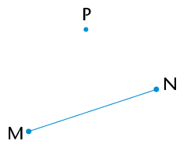
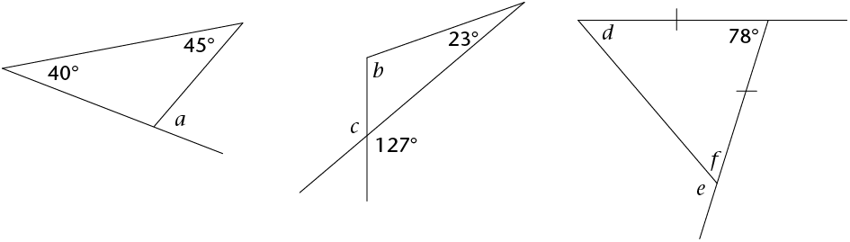
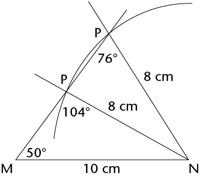
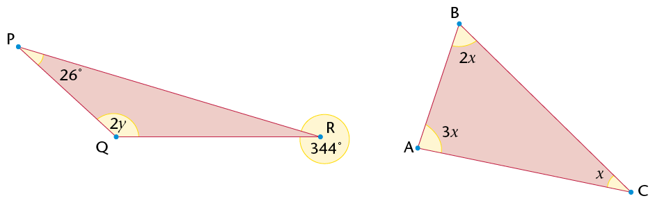
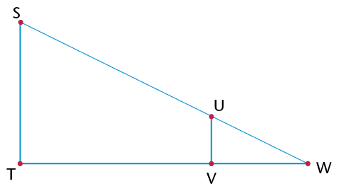
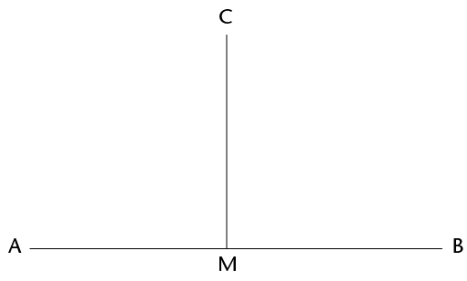
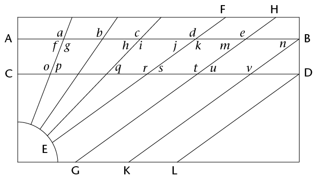
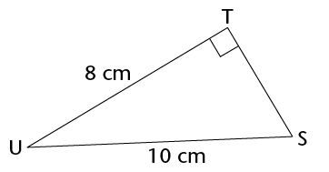
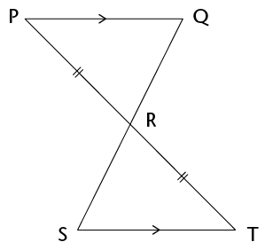
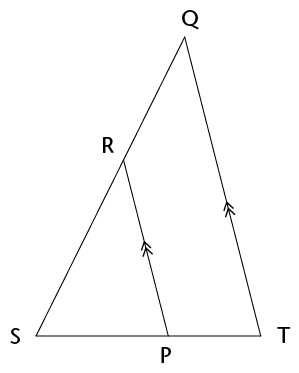

In hierdie hoofstuk sal jy die
konstruksie van meetkundige figure, met slegs 'n passer en
liniaal, hersien. Jy gaan die konstruksie van loodlyne,
halveerlyne van hoeke asook spesiale hoeke hersien en verder
ondersoek. Hierdie konstruksies help jou om meer konstruksies
asook eienskappe van 2D-figure te verstaan. Jy sal ook die
verbande tussen hoeke binne en buite 'n driehoek, sowel as
kongruensie van driehoeke ondersoek. Laastens gaan jy meer
uitvind oor die hoeklyne van vierhoeke en oor die binnehoeke
van verskillende veelhoeke.
10.1 Konstruksie van loodlyne
177
10.2 Halvering van hoeke
180
10.3 Konstruksie van spesiale
hoeke sonder 'n gradeboog 182
10.4 Halveerlyne van hoeke in
driehoeke 184
10.5 Binne- en buitehoeke van
driehoeke 185
10.6 Konstruksie van
kongruente driehoeke 187
10.7 Hoeklyne van vierhoeke
192
10.8 Hoeke in veelhoeke
195

10Konstruksie
van meetkundige figure
10.1 Konstruksie van loodlyne
HERSIEN LOODLYNE
Jy het in Graad 8 oor loodlyne
geleer.
1. Wat beteken dit as ons
sê "twee lyne is loodreg op mekaar"?
2. Gebruik jou gradeboog
om die hoeke tussen die pare lyne te meet. Sê dan of
die lyne loodreg op mekaar is of nie.
(a) (b)

ONDERSOEK LYNE WAT
GEVORM WORD WANNEER SIRKELS MEKAAR SNY
1. Doen die volgende in jou
oefeningboek:
(a) Gebruik jou passer en trek twee sirkels
van verskillende groottes wat oorvleuel.
(b) Trek 'n lyn deur die punte waar die
sirkels mekaar sny.
(c) Trek 'n lyn om die middelpunte van die
sirkels met mekaar te verbind.

Stap (a) Stap (b) Stap
(c)
(d) Gebruik jou gradeboog en
meet die hoeke tussen die snylyne.
(e) Wat kan jy oor die
snylyne sê?
2. Herhaal vraag 1(a) tot (e) met
sirkels wat ewe groot is.
3. Watter afleiding kan
jy maak oor 'n lyn wat deur die snypunte van twee oorvleuelende
sirkels getrek word en 'n lyn wat deur hulle middelpunte getrek
word?
GEBRUIK SIRKELS OM LOODLYNE TE
KONSTRUEER
Geval 1: 'n Loodlyn
deur 'n punt wat nie op die lynstuk is nie
Lees die
inligting en instruksies en doen die konstruksie in jou
oefeningboek.
|
Lynstuk MN met punt P op
'n afstand daarvan af word vir jou gegee. Jy moet 'n
lyn konstrueer wat loodreg op MN is, sodat die loodlyn
deur punt P gaan.

|
Stap 1
Gebruik jou passer om 'n
sirkel te trek waarvan die middelpunt die een eindpunt
van die lynstuk (N) is en deur punt P gaan.

|
|
Stap 2
Herhaal stap 1, maar maak
die ander eindpunt van die lynstuk (M) die middelpunt
van jou sirkel.

|
Stap 3
Verbind die punte waar
die sirkels sny: PQ ⊥
MN

|
Geval 2: 'n Loodlyn by 'n punt wat op die
lynstuk is
Lees die inligting en instruksies en
doen die konstruksie in jou oefeningboek.
|
Lynstuk XY met punt Z
daarop word vir jou gegee. Jy moet 'n loodlyn
konstrueer wat deur Z gaan.

|
Stap 1
Gebruik jou passer om 'n
sirkel met middelpunt Z te trek. Maak sy radius kleiner
as ZX. Let op die twee punte waar die sirkel XY
sny.

|
|
Stap 2
Stel jou passer wyer as
wat dit was vir die sirkel met middelpunt Z. Trek twee
ewe groot sirkels met middelpunte by die twee punte
waar die eerste (swart) sirkel XY sny. Die twee sirkels
(groen) sal oorvleuel.

|
Stap 3
Verbind die snypunte van
die twee oorvleuelende sirkels. Merk hierdie punte C en
D: CD ⊥ XY en
gaan deur punt Z.

|
OEFEN OM SIRKELS TE GEBRUIK OM
LOODLYNE TE KONSTRUEER
Trek in elk van die volgende twee
gevalle 'n lyn wat loodreg op die lynstuk is en deur punt P
gaan.
1.

2.


10.2 Halvering van hoeke
GEBRUIK SIRKELS OM
HOEKE TE HALVEER
Werk deur die
volgende voorbeeld waar twee snydende sirkels gebruik word om
'n hoek te halveer. Doen dan self die stappe in jou
oefeningboek.
Om 'n hoek te halveer
beteken om dit in twee ewe groot hoeke te verdeel.
|
A C word vir jou gegee. Jy moet
die hoek halveer. C word vir jou gegee. Jy moet
die hoek halveer.

|
Stap 1
Trek 'n sirkel met
middelpunt B om sodoende gelyke lengtes op albei bene
van die hoek af te merk. Merk die snypunte D en E: DB =
BE.

|
|
Stap 2
Trek twee ewe groot
sirkels met middelpunte by D en by E. Maak seker die
sirkels oorvleuel.

|
Stap 3
Trek 'n lyn van B af deur
die punte waar die twee ewe groot sirkels sny. Hierdie
lyn sal AC halveer.

|

Dieselfde konstruksie
as in stap 3 hier bo
Kan jy verduidelik waarom die
metode hier bo werk om 'n hoek te halveer?
Kan jy ook sien dat ons nie
volle sirkels hoef te teken nie, maar bloot dele van
sirkels (boë) kan gebruik om die konstruksie
hier bo te doen?
OEFEN OM HOEKE TE HALVEER
Halveer die
hoeke hier onder sonder om 'n gradeboog te gebruik.
Nota:
Laat die leerders verduidelik watter punt op die stelsel van
drie ineensluitende sirkels ooreenkom met die hoekpunte van die
hoeke. Laat hulle verduidelik hoe hulle die middelpunte van die
ineensluitende sirkels sal bepaal.
10.3 Konstruksie van spesiale hoeke sonder 'n
gradeboog
Hoeke van 30°,
45°, 60° en 90° staan bekend
as spesiale hoeke. Jy moet hierdie hoeke kan konstrueer
sonder om 'n gradeboog te gebruik.
KONSTRUEER 'N HOEK VAN
45°
Jy het geleer hoe
om 'n hoek van 90° te teken, en hoe om 'n hoek te
halveer, sonder om 'n gradeboog te gebruik. Gebruik hierdie
inligting om 'n hoek van 45°
Wenk: Verleng die
lynstuk na die linkerkant van X.
te
teken by punt X op die lynstuk hier onder.

KONSTRUEER HOEKE VAN
60° EN 30°
1. Wat weet jy oor die sye en
hoeke van 'n gelyksydige driehoek?
2. Trek twee sirkels met die
volgende eienskappe in jou oefeningboek:
-
• Die
sirkels is ewe groot.
- • Elke
sirkel gaan deur die ander sirkel se middelpunt.
- • Die
sirkels se middelpunte is A en B gemerk.
- • Die
snypunte van die sirkels is D en E gemerk.
Die
tekening hier regs dien as 'n voorbeeld.
3. Trek
die volgende lynstukke: AB, AD en DB.
4. Wat kan jy oor die lengtes van
AB, AD en DB sê?
5. Watter soort driehoek
is ABD?
6. Wat weet jy dus oor
 ,
,  en ?
en ?
7. Gebruik jou kennis van
die halvering van hoeke om 'n hoek van 30° te
konstrueer op die konstruksie wat jy in vraag 2 gemaak het.
8.
Gebruik dit wat jy hier bo geleer het om 'n hoek van
60° by punt P op lynstuk PQ hier onder te
konstrueer.

KONSTRUEER HOEKE WAT VEELVOUDE
VAN SPESIALE HOEKE IS
1. Voltooi die tabel. Die eerste
blok is reeds vir jou ingevul.
|
|
|
|
|
|
30°
|
30°;
60°; 90°; 120°;
150°; 180°; 210°;
240°; 270°; 300°;
330°
|
45°
|
45°,
90°, 135°, 180°,
225°, 270°, 315°
|
|
60°
|
60°;
120°; 180°; 240°;
300°
|
90°
|
90°;
180°; 270°
|
2. Konstrueer die
volgende hoeke in jou oefeningboek sonder om 'n gradeboog te
gebruik. Jy sal elke keer meer as een konstruksie moet doen om
die hoek te verkry.
(a) 120°
(b) 135° (c) 270° (d) 240° (e)
150°
10.4 Halveerlyne van hoeke in driehoeke
In afdeling 10.2
het jy geleer hoe om 'n hoek te halveer. Jy gaan nou die
halveerlyne van hoeke in 'n driehoek ondersoek.
1. (a) Halveer elk van die hoeke van die
skerphoekige driehoek hier onder.
(b) Verleng elk van die halveerlyne na die
teenoorstaande sy van die driehoek.
(c) Wat sien jy raak?
2. (a) Doen dieselfde met die stomphoekige
driehoek.
(b) Wat sien jy raak?

3. Vergelyk jou driehoeke
met twee klasmaats s'n. Julle behoort dieselfde resultate te
hê.

Jy behoort te gevind het
dat die drie halveerlyne van die hoeke van 'n driehoek
in een punt sny. Hierdie punt is dieselfde afstand van
elke sy van die driehoek af.
10.5 Binne- en buitehoeke van driehoeke
WAT IS BINNE- EN
BUITEHOEKE?
'n Binnehoek is 'n
hoek wat tussen twee sye van 'n driehoek lê. Dit
is binne-in die driehoek. 'n Driehoek het drie
binnehoeke.
'n Buitehoek is 'n
hoek tussen 'n sy van 'n driehoek en 'n ander sy wat verleng
word. Dit is buite die gegewe driehoek.
Kyk na
\triangle}PQR. Sy drie sye is verleng om drie buitehoeke te
skep.
Elke buitehoek het een
aangrensende binnehoek (langsaan) en twee teenoorstaande
binnehoeke, soos in die volgende tabel beskryf word.
|
|
|
|
|
1
|
x
|
z en y
|
|
2
|
y
|
x en z
|
|
3
|
z
|
x en y
|
IDENTIFISEER BUITEHOEKE EN
TEENOORSTAANDE BINNEHOEKE
1. Benoem elke buitehoek en sy
twee teenoorstaande binnehoeke hier onder.
(a) (b) (c)

|
|
4
|
9
|
6
|
10
|
11
|
|
|
1 en 2
|
5 en 7
|
5 en 8
|
11 en 1212 &
13en 14
|
13 en 14
|
2. Elke sy van \triangle}ABC hier
onder is in albei rigtings verleng om ses buitehoeke te
skep.

(a) Skryf die name van die binnehoeke van
die driehoek neer.
(b) Aangesien 'n driehoek drie sye het wat
in albei rigtings verleng kan word, is daar twee buitehoeke by
elke hoekpunt. Skryf die name van al die buitehoeke neer.
(c) Verduidelik waarom M L nie 'n buitehoek van \triangle}ABC
is nie.
L nie 'n buitehoek van \triangle}ABC
is nie.
(d) Skryf twee ander hoeke neer wat nie
binnehoeke of buitehoeke is nie.
ONDERSOEK DIE BUITE-
EN BINNEHOEKE van 'N DRIEHOEK
1. Kyk na \triangle}LMN. Skryf
die naam van die buitehoek neer.
2. Gebruik 'n gradeboog
om die binnehoeke en die buitehoek te meet. Skryf die afmetings
op die tekening neer.
3. Gebruik jou bevindings
in vraag 2 om hierdie som te voltooi:
L N + M
N + M N =
N =
4. Wat is die verband
tussen die buitehoek van 'n driehoek en die som van die
teenoorstaande binnehoeke?
Die buitehoek van 'n
driehoek is gelyk aan die som van die teenoorstaande
binnehoeke.
5. Bepaal die groottes
van hoeke a tot
f hier onder sonder
om 'n gradeboog te gebruik. Gee redes vir die bewerings wat jy
maak soos jy die antwoorde uitwerk.
(a) (b) (c)

a = 85°
(buite∠van
â–³)
b = 127°
- 23° = 104°,
d + f = 180°
- 78° = 102°
d = f (∠e
teenoor gelyke sye)

10.6 Konstruksie van kongruente driehoeke
Twee driehoeke is kongruent as
hulle presies dieselfde vorm en grootte het: hulle kan
presies bo-op mekaar pas. Dit beteken al drie ooreenkomstige
sye en al drie ooreenkomstige hoeke is ewe groot, soos wat in
die volgende twee pare gewys word.
\triangle}ABC ≡
\triangle}DEF en
\triangle}GHI
≡
\triangle}JKL.
In elk van die pare van driehoeke is die ooreenstemmende
hoeke en sye gelyk.
MINIMUM VOORWAARDES VIR
KONGRUENSIE
Om te bepaal of twee driehoeke
kongruent is, hoef ons nie te weet wat die afmetings van
al drie sye en
al drie hoeke is
nie, maar ons het sekere minimum afmetings nodig. Jy gaan nou
ondersoek instel oor watter stelle afmetings slegs een
moontlike driehoek gee.
1. Gebruik 'n liniaal,
passer en gradeboog om die volgende driehoeke te konstrueer.
Minimum afmetings word elke keer gegee.
(a) As drie sye gegee word: sy, sy, sy
(SSS): \triangle}DEF met DE = 7 cm, DF = 6 cm en EF = 5 cm.

(b) As drie hoeke gegee word: hoek, hoek,
hoek (HHH):\triangle}ABC met
 = 80°,
= 80°,  = 60° en = 40°.
= 60° en = 40°.
(c) As een sy en twee hoeke gegee word: sy,
hoek, hoek (SHH):\triangle}GHI met GH = 8 cm,
 = 60° en
= 60° en  = 30°.
= 30°.

(d) As twee sye en 'n ingeslote hoek gegee
word: sy, hoek, sy (SHS):\triangle}JKL met JK = 9 cm,
 = 130° en KL = 7 cm.
= 130° en KL = 7 cm.

(e) As twee sye en 'n hoek wat nie ingesluit
is nie gegee word: sy, sy, hoek (SSH):
Let daarop dat daar
hier twee moontlikhede is.
\triangle}MNP met MN = 10 cm,
 = 50° en PN = 8 cm.
= 50° en PN = 8 cm.
(f) As 'n regte hoek, die skuinssy en 'n sy
gegee word (90°SS):\triangle}TRS met
TR ⊥ RS, RS = 7 cm
en TS = 8 cm.
(g) Driehoek UVW met UV = 6 cm en VW = 4
cm.
2. Vergelyk jou driehoeke
met drie klasmaats s'n. Watter van jou driehoeke is kongruent
aan hulle s'n? Watter is nie kongruent nie?
3. Kyk weer na
\triangle}MNP (vraag 1(e)). Het jy en jou maats ook gesien dat
twee verskillende driehoeke geteken kan word wat albei aan die
gegewe afmetings voldoen? Een van die driehoeke is stomp en die
ander skerp. Die stappe hier onder wys hoekom.
|
Stap 1
Konstrueer MN = 10 cm en
die 50°-hoek by M, al weet jy nie wat die
lengte van die onbekende sy (MP) is nie.

|
Stap 2
 is onbekend, maar NP = 8 cm.
Konstrueer dus 'n boog 8 cm van N af. Elke punt op die
boog is 8 cm van N af. is onbekend, maar NP = 8 cm.
Konstrueer dus 'n boog 8 cm van N af. Elke punt op die
boog is 8 cm van N af.
|
|
Stap 3
Punt P moet 8 cm van N af
wees en op die onbekende sy van die driehoek val. Die
boog sny die derde sy by twee punte, so P kan by enige
punt wees.
Twee driehoeke is dus
moontlik en albei voldoen aan die gegewe voorwaardes,
d.w.s. MN = 10 cm, NP = 8 cm en  = 50°. = 50°.

Laat die leerders die
konstruksies doen.
|
4. Voltooi die tabel.
Skryf neer of ons 'n kongruente driehoek kan konstrueer as die
volgende voorwaardes gegee word.
|
|
|
|
3 sye (SSS)
|
Ja
|
|
2 sye (SS)
|
Nee
|
|
3 hoeke (HHH)
|
Nee
|
|
2 hoeke en 'n sy (HHS)
|
Ja
|
|
2 sye en 'n hoek nie tussen
die sye nie (SSH)
|
Nee
|
|
2 sye en 'n hoek tussen die
sye (SHS)
|
Ja
|
|
Reghoekig met die skuinssy
en 'n sy (90°SS)
|
Ja
|
10.7 Hoeklyne van vierhoeke
TEKEN HOEKLYNE
'n Hoeklyn is 'n reguit lyn in 'n
figuur wat twee hoekpunte van die figuur verbind, waar die
hoekpunte nie langs mekaar is nie.
1. Kyk na die vierhoeke
hier onder. Die twee hoeklyne van die vierkant is ingeteken: AC
en BD.
2. Teken die hoeklyne van die
ander vierhoeke hier onder in.
Vierkant Reghoek Parallelogram

Ruit Vlieër Trapesium
3. Hoeveel sye het 'n
vierhoek?
4. Hoeveel hoeke het 'n
vierhoek?
5. Hoeveel hoeklyne het 'n
vierhoek?
HOEKLYNE VAN 'N RUIT
Op die volgende bladsy is twee
oorvleuelende sirkels met middelpunte A en B. Die sirkels is
dieselfde grootte.
1. Konstrueer 'n ruit in
die sirkels deur die middelpunt van elke sirkel met die
snypunte van die sirkels te verbind. Verbind A en B.
2. Konstrueer die
middelloodlyn van AB.(Gaan terug na afdeling 10.1 as jy hulp
nodig het.) Wat merk jy op?
'n Middelloodlyn is 'n
lyn wat 'n ander lyn teen 'n regte hoek (90°) in
die helfte sny.

3. Halveer die hoeklyne
mekaar?
4. Voltooi die sin: Die hoeklyne
van 'n ruit sal mekaar altyd
HOEKLYNE VAN 'N
VLIEËR
Hier onder is twee oorvleuelende
sirkels met middelpunte D en E. Die sirkels is verskillende
groottes.
1. Konstrueer 'n
vlieër deur die middelpunte van die sirkels met die
snypunte van die sirkels te verbind.
2. Trek die hoeklyne van die
vlieër in.
3. Merk al die lyne wat
ewe lank is.
4. Is die hoeklyne van die
vlieër loodreg?
5. Halveer die hoeklyne van die
vlieër mekaar?
6. Wat is die verskil tussen die
hoeklyne van 'n ruit en dié van 'n
vlieër?
HOEKLYNE VAN
PARALLELOGRAMME, REGHOEKE EN VIERKANTE
1. Gebruik
die rooster om 'n parallelogram, reghoek en vierkant te
teken.
2. Trek die
hoeklyne van die vierhoeke hier bo in.
3. Dui op
elke figuur al die lengtes van die halveerlyne aan wat ewe lank
is. (Gebruik 'n liniaal.)
4. Gebruik die inligting wat jy
gekry het om die tabel te voltooi. Vul "ja" of "nee" in.
|
|
|
|
|
|
Parallelogram
|
Nee
|
Ja
|
Nee
|
|
Reghoek
|
Ja
|
Ja
|
Nee
|
|
Vierkant
|
Ja
|
Ja
|
Ja
|
10.8 Hoeke in veelhoeke
ONDERSOEK DIE
SOM VAN DIE HOEKE IN VEELHOEKE M.B.V. HOEKLYNE
1. Ons kan 'n vierhoek in twee
driehoeke verdeel deur een hoeklyn in te trek.
(a) Trek hoeklyne in om elk van die ander
veelhoeke hier onder in so min driehoeke as moontlik te
verdeel.
(b) Skryf die getal driehoeke in elke
veelhoek neer.
Vierhoek Vyfhoek Seshoek
|
|
2
|
3
|
4
|
|
|
2 \times 180°
= 360°
|
3 \times
180° = 540°
|
4 \times
180° = 720°
|
Sewehoek Agthoek Negehoek
|
|
5
|
6
|
7
|
|
|
900°
|
1
080°
|
1
260°
|
2. Die som van die hoeke
van een driehoek = 180°. 'n Vierhoek bestaan uit
twee driehoeke, so die som van die hoeke in 'n vierhoek = 2
\times 180° = 360°. Werk die som van die
binnehoeke van elk van die ander veelhoeke hier bo uit.
1. Pas die woorde in die regterkolom
by die definisies in die linkerkolom. Skryf die letter van die
definisie langs die bypassende woord neer.
|
(a) 'n Vierhoek met
hoeklyne wat loodreg op mekaar is en wat mekaar
halveer
|
Vlieër
|
|
(b) 'n Vierhoek met
hoeklyne wat loodreg op mekaar is maar net een van die
hoeklyne halveer die ander een
|
Kongruent
|
|
(c) 'n Vierhoek wat
ewe lang hoeklyne het wat mekaar halveer
|
Buitehoek
|
|
(d) Figure wat
presies dieselfde grootte en vorm het
|
Ruit
|
|
(e) In die helfte
sny
|
Loodlyne
|
|
(f) 'n Hoek
wat buite 'n geslote figuur gevorm word: dit is tussen
'n sy en 'n verlengde sy van die figuur
|
Halveer
|
|
(g) Lyne wat mekaar
teen 'n hoek van 90° sny
|
Spesiale hoeke
|
|
(h) 90°,
45°, 30°, 60°
|
Reghoek
|
2. Voltooi die
sin: Die buitehoek van 'n driehoek is gelyk aan
teenoorstaande twee binnehoeke.
3. (a) Konstrueer \triangle}PQR met
hoeke van 30° en 60°. Die sy tussen die
hoeke moet 8 cm wees. Jy mag net 'n liniaal en 'n passer
gebruik.
(b) Sal alle
driehoeke met dieselfde afmetings hier bo kongruent wees aan
\triangle}PQR? Verduidelik jou antwoord.
Ja, alle sye en hoeke van
sulke driehoeke sal ewe groot wees. Die driehoeke mag
wel in verskillende posisies
lê. Dit is omdat die derde hoek = 90°
is.
Jy het reeds geleer om tussen
gelyksydige, gelykbenige en reghoekige driehoeke te onderskei,
asook tussen die volgende vierhoeke: parallelogramme, reghoeke,
vierkante, ruite, trapesiums en vlieërs. Jy het die
eienskappe van hierdie figure, soos watter sye gelyk of
ewewydig is, of watter hoeke gelyk is, ondersoek ten einde die
figure te klassifiseer. In hierdie hoofstuk gaan jy jou kennis
van die eienskappe van hierdie figure asook algemene eienskappe
van driehoeke en vierhoeke gebruik om verdere inligting oor die
figure uit te werk. Jy gaan ook meer oor kongruensie en
gelykvormigheid van driehoeke leer.
11.1 Hersiening: Klassifikasie
van driehoeke 199
11.2 Bepaling van onbekende
hoeke in driehoeke 201
11.3 Vierhoeke 203
11.4 Kongruente driehoeke
207
11.5 Gelykvormige driehoeke
211
11.6 Verrykingsvrae 217

11Meetkunde
van 2D-figure
11.1 Hersiening: Klassifikasie van
driehoeke
1. Gebruik 'n
gradeboog om die binnehoeke van elk van die volgende driehoeke
te meet. Skryf die groottes van die hoeke op die
diagramme.

2.
Klassifiseer die driehoeke in vraag 1 volgens hulle
hoekeienskappe. Kies uit die volgende soorte driehoeke:
skerphoekig, stomphoekig en reghoekig.
(a) \triangle}ABC is 'n
driehoek,
want
(b) \triangle}EDF is
'n
driehoek,
want
(c) \triangle}GHI is
'n
driehoek,
want
3.
Die gemerkte hoeke in elke driehoek hier onder is gelyk.
Klassifiseer die driehoeke volgens die eienskappe van hulle
hoeke en sye.
(a) \triangle}
is 'n skerphoekige
gelykbenige driehoek, want
en
.
(b) \triangle}
is 'n reghoekige gelykbenige
driehoek, want
en
.
(c) \triangle}
is 'n stomphoekige
gelykbenige driehoek, want
en
.

4. Sê
vir watter soort driehoek elke bewering waar is. As dit waar is
vir alle driehoeke, skryf "Alle driehoeke".
|
|
|
|
(a)
|
Twee sye van die
driehoek is gelyk.
|
Gelykbenige
|
|
(b)
|
Een hoek van die
driehoek is stomp.
|
Stomphoekige
|
|
(c)
|
Twee hoeke van die
driehoek is gelyk.
|
Gelykbenige
|
|
(d)
|
Al drie hoeke van die
driehoek is gelyk aan 60°.
|
Gelyksydige
|
|
(e)
|
Die grootte van 'n
buitehoek is gelyk aan die som van die
teenoorstaande binnehoeke.
|
Alle
driehoeke
|
|
(f)
|
Die langste sy van die
driehoek is teenoor die grootste
hoek.
|
Alle
driehoeke, behalwe gelyksydige driehoeke
|
|
(g)
|
Die som van die twee
korter sye van die driehoek is groter as die lengte van
die langste sy.
|
Alle
driehoeke,behalwe gelyksydige
driehoeke
|
|
(h)
|
Die kwadraat van die
lengte van een sy is gelyk aan die som van
die kwadrate van die ander sye.
|
Reghoekige
|
|
(i)
|
Die kwadraat van die
lengte van een sy is groter as die som van die kwadrate
van die ander sye.
|
Stomphoekige
|
|
(j)
|
Die som van die
binnehoeke van die driehoek is
180°.
|
Alle
driehoeke
|
11.2 Bepaling van onbekende hoeke in
driehoeke
Wanneer jy in meetkunde die
grootte van 'n onbekende hoek of lengte van 'n figuur moet
bepaal, moet jy 'n rede gee vir elke bewering wat jy
maak.Voltooi die voorbeeld hier onder:
In \triangle}ABC, is AC = BC
en = 40°. Bepaal die
grootte van
= 40°. Bepaal die
grootte van  (word in die diagram as
x gewys).
(word in die diagram as
x gewys).
|
|
|
|
AC =
BC
∴
 = =
180° = 40° + x +
x
180° - 40° =
2x
∴
x =
|
Gegee
Som ∠e
\triangle}
|
BEPALING VAN ONBEKENDE
LENGTES EN HOEKE
1. Bereken die groottes van
die onbekende hoeke.

a =
49° (som ∠e \triangle}) b =
105° (som ∠e \triangle})
c =
75° (buite∠\triangle} of
∠e op reg. lyn)
n str. line)
2. Bepaal die groottes van
die onbekende hoeke en die lengte van MO.

d =
76° (gelykb. \triangle}) g = 51°
(buite∠e
\triangle})
e =
28° (som ∠e \triangle})
h = 51° (gelykb.
\triangle} of ∠e
op reg. lyn of som∠e
\triangle})
f =
284° (∠e om 'n punt)
z = 102° (∠e op reg. lyn
of buite ∠e
\triangle})
3. Bereken die groottes
van y en x.

y =
69° (som ∠e \triangle}) x =
30° (som ∠e
\triangle})
11.3 Vierhoeke
EIENSKAPPE VAN
VIERHOEKE
1. Benoem die
volgende vierhoeke. Merk in elke figuur die hoeke en sye wat
gelyk is. Gebruik waar nodig jou liniaal en gradeboog om
hoekgroottes en lengtes te meet.
2. Voltooi die volgende
tabel:
|
|
|
|
|
|
|
|
|
|
|
Ten minste een paar
teenoorstaande hoeke is gelyk.
|
ja
|
ja
|
ja
|
ja
|
ja
|
nee
|
|
Albei pare
teenoorstaande hoeke is gelyk.
|
ja
|
ja
|
ja
|
ja
|
nee
|
nee
|
|
Ten minste een paar
aangrensende hoeke is gelyk.
|
ja
|
nee
|
ja
|
nee
|
nee
|
nee
|
|
Al vier hoeke is
gelyk.
|
ja
|
nee
|
ja
|
nee
|
nee
|
nee
|
|
Enige twee
teenoorstaande sye is gelyk.
|
ja
|
ja
|
ja
|
ja
|
nee
|
nee
|
|
Twee aangrensende sye
is gelyk, en die ander twee aangrensende sye is ook
gelyk.
|
ja
|
ja
|
nee
|
nee
|
ja
|
nee
|
|
Al vier sye is
gelyk.
|
ja
|
ja
|
nee
|
nee
|
nee
|
nee
|
|
Ten minste een paar
teenoorstaande sye is ewewydig.
|
ja
|
ja
|
ja
|
ja
|
nee
|
ja
|
|
Enige twee
teenoorstaande sye is ewewydig.
|
ja
|
ja
|
ja
|
ja
|
nee
|
nee
|
|
Die twee hoeklyne is
loodreg.
|
ja
|
ja
|
nee
|
nee
|
ja
|
nee
|
|
Ten minste een hoeklyn
halveer die ander een.
|
ja
|
ja
|
ja
|
ja
|
ja
|
nee
|
|
Die twee hoeklyne
halveer mekaar.
|
ja
|
ja
|
ja
|
ja
|
nee
|
nee
|
|
Die twee hoeklyne is
gelyk.
|
ja
|
nee
|
ja
|
nee
|
nee
|
nee
|
|
Ten minste een hoeklyn
halveer 'n paar teenoorstaande hoeke.
|
ja
|
ja
|
nee
|
nee
|
ja
|
nee
|
|
Albei hoeklyne halveer
'n paar teenoorstaande hoeke.
|
ja
|
ja
|
nee
|
nee
|
nee
|
nee
|
|
Die som van die
binnehoeke is 360°.
|
ja
|
ja
|
ja
|
ja
|
ja
|
ja
|
3. Kyk na die eienskappe
van 'n vierkant en 'n ruit.
(a) Is al die eienskappe van 'n
vierkant ook die eienskappe van 'n ruit?
Verduidelik.
'n Vierkant
het regte hoeke by die hoekpunte, maar 'n ruit het nie. 'n Ruit
het
nie gelyke
aangrensende hoeke by die hoekpunte nie. Die enigste eienskap
wat
hoeke betref
wat hulle deel, is dat die teenoorstaande hoeke gelyk
is.
'n Vierkant
het gelyke hoeklyne. 'n Ruit het nie.
(b) Is al die eienskappe van 'n ruit
ook die eienskappe van 'n vierkant? Verduidelik.
(c) Watter bewering is
waar?
'n Vierkant is 'n
spesiale soort ruit.
'n Ruit is 'n spesiale
soort vierkant.
4. Kyk na die eienskappe
van reghoeke en vierkante.
(a) Is al die eienskappe van 'n
vierkant ook die eienskappe van 'n reghoek?
Verduidelik.
die hoeke by
die hoekpunte halveer nie.
(b) Is al die eienskappe
van 'n reghoek ook die eienskappe van 'n vierkant?
Verduidelik.
(c) Watter bewering is
waar?
'n Vierkant is 'n
spesiale soort reghoek.
'n Reghoek is 'n
spesiale soort vierkant.
5. Kyk na die eienskappe
van parallelogramme en reghoeke.
(a) Is al die eienskappe van 'n
parallelogram ook dié van 'n reghoek?
Verduidelik.
eienskappe.
(b) Is al die eienskappe van 'n
reghoek ook dié van 'n parallelogram?
Verduidelik.
(c) Watter bewering is
waar?
'n Reghoek is 'n
spesiale parallelogram.
'n Parallelogram is 'n
spesiale reghoek.
6. Kyk na die
eienskappe van 'n ruit en 'n parallelogram. Is 'n ruit 'n
spesiale soort parallelogram? Verduidelik.
7. Vergelyk die
eienskappe van 'n vlieër en 'n parallelogram. Waarom
is 'n vlieër nie 'n spesiale soort parallelogram
nie?
'n
Vlieër het nie die volgende eienskappe, wat dit sou
moes hê om 'nparallelogram
te wees, nie:
teenoorstaande sye gelyk, albei pare teenoorstaande
syeewewydig en
8. Vergelyk die
eienskappe van 'n trapesium en 'n parallelogram. Waarom is 'n
trapesium nie 'n spesiale soort parallelogram
nie?
'n Trapesium
het nie die volgende eienskappe, wat dit sou moes hê
om 'n
parallelogram
te wees nie: gelyke teenoorstaande sye, albei pare
teenoorstaande sye
ONBEKENDE SYE EN HOEKE IN
VIERHOEKE
1.
Bepaal die groottes van hoeke a tot e in die vierhoeke. Gee
redes vir jou antwoorde.
a =
90° (binnehoek van vierkant) d =
45° (teenoorst. ∠e
||m)
b =
45° (hoeklyne van vierkant) e =
135° (binne∠e
vierh. = 360°)
c = 145° (binne∠evierh.
= 360°)
2. Bereken die
omtrek van dievierhoeke hier regs. Gee
jouantwoorde tot twee
desimaleplekke.

11.4 Kongruente driehoeke
DEFINISIE EN
NOTASIE VAN KONGRUENTE DRIEHOEKE
As twee driehoeke kongruent is,
het hulle presies dieselfde grootte en vorm. As jy een van die
driehoeke uitsny en dit bo-op die ander neersit, sal hulle
presies op mekaar pas.
As twee driehoeke
kongruent is, is elke sy in die een driehoek gelyk aan elke
ooreenstemmende sy in die ander driehoek. Elke hoek in die
een driehoek is ook gelyk aan elke ooreenstemmende hoek in
die ander driehoek.
 In die driehoeke hier bo kan jy
sien dat \triangle}ABC ≡
\triangle}XYZ.
In die driehoeke hier bo kan jy
sien dat \triangle}ABC ≡
\triangle}XYZ.
Kongruensiesimbool≡
beteken "is
kongruentaan"
Die volgorde waarin jy die letters skryf
as jy sê dat tweedriehoeke
kongruent is, is baie belangrik. Die letters van
dieooreenstemmende hoekpunte tussen die twee
driehoeke moet in dieselfde posisie in die notasie
verskyn. Die notasie vir die driehoeke hier bo moet
byvoorbeeld\triangle}ABC ≡
\triangle}XYZ wees, want dit dui aan
dat  =
=  ,
,  =
=  ,
,  =
=  , AB = XY, BC = YZ en AC = XZ.
, AB = XY, BC = YZ en AC = XZ.
Dit is verkeerd
om \triangle}ABC ≡
\triangle}ZYX te skryf. Alhoewel die letters na dieselfde
driehoeke verwys, dui hierdie notasie aan dat
 =
=  ,
,  =
=  , AB = ZY en BC = YX, en
hierdiebewerings is nie waar nie.
, AB = ZY en BC = YX, en
hierdiebewerings is nie waar nie.
Skryf die gelyke hoeke en sye volgens die volgende
driehoeke se notasies neer:
1. \triangle}KLM ≡
\triangle}PQR:
2. \triangle}FGH ≡
\triangle}CST:
MINIMUM VOORWAARDES VIR
KONGRUENTE DRIEHOEKE
In die vorige hoofstuk het jy
die minimum voorwaardes ondersoek waaraan twee (of meer)
driehoeke moet voldoen sodat hulle as kongruent verklaar kan
word.
Die voorwaardes vir
kongruensie:
Besluit of die driehoeke in
elke paar hier onder kongruent is of nie. Skryf die notasie
korrek vir elke kongruente paar en gee 'n rede vir
kongruensie.
1. 2.
3. 4.
5. 6.
BEWYS DAT DRIEHOEKE
KONGRUENT IS
Jy kan dit wat jy oor die
minimum voorwaardes vir kongruensie weet gebruik om te bewys
dat twee driehoeke kongruent is.
Wanneer
jy 'n bewys vir kongruensie gee, onthou die
volgende:
- •
Elke bewering wat jy maak moet 'n rede
hê.
- •
Jy moet drie bewerings gee om te bewys dat enige twee
driehoeke kongruent is.
- •
Gee die rede vir kongruensie.
Voorbeeld:
In die skets aan die regterkant
is AB // EC en AD = DC.
Bewys dat die driehoeke
kongruent is.
Oplossing:
|
|
|
|
In \triangle}ABD en
\triangle}CED:
1) AD = DC
2) A B = C B = C E E
3) B D = E D = E D D
∴
\triangle}ABD ≡
\triangle}CED
|
Gegee
Regoorst.
∠e
Verw.
∠e
(AB// EC)
HHS
|
1. Bewys dat
\triangle}ACE ≡
\triangle}BDE.
2. Bewys dat
\triangle}WXZ ≡
\triangle}YXZ.
|

|
|
|
∴
\triangle}WXZ ≡
\triangle}YXZ
|
|
3. Bewys dat QR =
SP. (Wenk: Bewys eers dat die driehoeke kongruent
is.)
|

|
|
|
∴
\triangle}PQR ≡
\triangle}RSP
|
Verw. ∠e
(QP// RS)
|
4. Bewys dat die driehoeke
hier onder kongruent is. Bepaal dan die grootte van
QP.
|

|
|
|
∴
\triangle}PQM ≡
\triangle}PNM
∴
Q M = 41° M = 41°
|
|

11.5 Gelykvormige driehoeke
EIENSKAPPE VAN
GELYKVORMIGE DRIEHOEKE
\triangle}BAC en \triangle}DEF
is gelykvormig. Gelykvormige figure het dieselfde vorm,
maar hulle groottes kan verskillend wees.

1. (a) Gebruik
'n gradeboog om die hoeke in elke driehoek hier bo te meet.
Voltooi dandie tabel hier onder.
|
|
|
|
|
 =
60° =
60°
|
=
60°
|
|
|
 =
40° =
40°
|
 =
40° =
40°
|
|
|
 =
80° =
80°
|
 =
80° =
80°
|
|
(b) Wat kan jy oor die groottes van
die hoeke in gelykvormige driehoeke sê?
2. (a) Gebruik 'n liniaal om die
lengtes van die sye in elke driehoek in vraag 1 te meet.
Voltooi dan die tabel hier onder.
|
|
|
|
|
BA = 6 cm
|
DE = 8 cm
|
BA : DE = 6 : 8
= 1 : 1
|
|
BC = 3,9 cm
|
DF = 5,2 cm
|
BC : DF = 3,9 :
5,2 = 1 : 1
|
|
CA = 5,3 cm
|
FE = 7 cm
|
CA : FE = 5,25 :
7 = 1 : 1
|
(b) Wat kan jy oor die verband tussen
die sye ingelykvormige driehoeke
sê?
Onthou:
Jy lees 'n verhouding
soos byvoorbeeld 2 : 1 as "twee tot een".
gevalis \triangle}DEF se
sylengtes1,3 keer so lank soos dié
van \triangle}BAC.
3. Die volgende
notasie wys dat die driehoeke gelykvormig is:
\triangle}BAC /// \triangle}DEF. Waarom dink
jy skryf ons die eerste driehoek as \triangle}BAC
en nie as \triangle}ABC nie?
dieselfde posisie wees. \triangle}BAC
/// \triangle}DEF dui dus aan:
, wat korrek is.
Die eienskappe van
gelykvormige driehoeke:
Notasie vir gelykvormige
driehoeke:
As jy bewys dat driehoeke
gelykvormig is, moet jy óf bewys dat die
ooreenstemmende hoeke gelyk is óf dat die sye in
dieselfde verhouding tot mekaar is.
WERK MET EIENSKAPPE VAN
GELYKVORMIGE DRIEHOEKE
1. Besluit of die pare
driehoeke gelykvormig is.
(a) (b)
(c) (d)
2. Doen die volgende taak
in jou oefeningboek.
Konstrueer die driehoeke in (a) tot (d) met
'n liniaal en gradeboog. Gebruik jou kennis van gelykvormigheid
om die tweede driehoek in elke vraag te teken. Dui die groottes
van die ooreenstemmende sye en hoeke op die tweede driehoek
aan.
(a) In \triangle}EFG,
 = 75°, EG = 4 cm en GF = 5
cm. \triangle}ABC is 'n vergroting van
\triangle}EFG, met sy sye drie keer langer.
= 75°, EG = 4 cm en GF = 5
cm. \triangle}ABC is 'n vergroting van
\triangle}EFG, met sy sye drie keer langer.
(b) In \triangle}MNO,
 = 45°,
= 45°,  = 30° en MN = 5 cm.
\triangle}PQR is gelykvormig aan \triangle}MNO.
Die sye van \triangle}MNO en die sye
van \triangle}PQR is in die
verhouding 1 : 3.
= 30° en MN = 5 cm.
\triangle}PQR is gelykvormig aan \triangle}MNO.
Die sye van \triangle}MNO en die sye
van \triangle}PQR is in die
verhouding 1 : 3.
(c) \triangle}RST is 'n
gelykbenige driehoek.  = 40°, RS is 10 cm en RS =
RT. \triangle}VWX is gelykvormig aan
\triangle}RST. Die sye van \triangle}RST en
die sye van \triangle}VWX is in
dieverhouding 1 :
= 40°, RS is 10 cm en RS =
RT. \triangle}VWX is gelykvormig aan
\triangle}RST. Die sye van \triangle}RST en
die sye van \triangle}VWX is in
dieverhouding 1 :  .
.
(d) \triangle}KLM
is reghoekig by  , LM is 7 cm en die skuinssy
is 12 cm. \triangle}XYZ is gelykvormig aan
\triangle}KLM en sy sye se lengtes is 'n derde van
\triangle}KLM s'n.
, LM is 7 cm en die skuinssy
is 12 cm. \triangle}XYZ is gelykvormig aan
\triangle}KLM en sy sye se lengtes is 'n derde van
\triangle}KLM s'n.
|
ONDERSOEK:
MINIMUM VOORWAARDES VIR GELYKVORMIGHEID
|
|
|
|
Watter van die
volgende is minimum voorwaardesvir
gelykvormige driehoeke?
(a) Twee hoeke in een
driehoek is gelyk aan twee hoeke in 'n
ander driehoek.
(b) Twee sye van een
driehoek is in dieselfde verhouding tot
mekaar as twee sye in 'n ander
driehoek.
(c) Twee sye van een
driehoek is in dieselfdeverhouding tot
mekaar as twee sye van 'nander driehoek,
en die ingeslote hoek is gelykaan die hoek
tussen die ooreenstemmendesye.
(d) Twee sye van een
driehoek is in dieselfdeverhouding as twee
sye van 'n ander driehoek,en een hoek
wat nie tussen die
twee sye is nie,is
gelyk aan die ooreenstemmende hoek in
dieander driehoek.
(Dit werk slegs as
die sy teenoor die gegewehoek die langer
sy is.)
|
LOS PROBLEME MET
GELYKVORMIGE DRIEHOEKE OP
1. Lynstuk QR is ewewydig
aan lynstuk ST.
Ewewydige lyne
snymekaar nooit nie. Twee lyne
isewewydigaan mekaar as die afstand tussen
hulle dieselfde langs die hele lengte van die lyne
is.

Voltooi die volgende bewys
dat \triangle}QRU /// \triangle}TSU:
|
|
|
|
R T = Q T = Q S S
Q S = S =
Q R = R =
∴
\triangle}QRU///\triangle}TSU
|
Verw.
∠e
Regoorst.
∠e
Gelyke
∠e
(of HHH)
|
2. Die volgende snydende
lynstukke vorm driehoekpare tussen ewewydige lyne.

(a) Is die driehoeke in elke paar
gelykvormig? Verduidelik.
(b) Skryf pare
gelykvormige driehoeke neer.
(c) Is driehoeke soos dié
altyd gelykvormig? Verduidelik hoe jy seker kan wees
sonderom elke moontlike driehoekpaar te
meet.
3.
Hier regs vorm die snylyne pare vandriehoeke
tussen lynstukke wat nieewewydig is nie. Is
hierdie pare vandriehoeke gelykvormig?
Verduidelikwaarom of waarom nie.
4.
Kyk na die driehoeke hier onder. DE//
BC. Bewys dat \triangle}ABC///
\triangle}ADE.
|

|
|
|
|
 is
gemeenskaplik is
gemeenskaplik
∴
\triangle}ABC /// \triangle}ADE
|
Ooreenk. ∠e (DE
// BC)
Ooreenk.∠e
(DE
//BC)
ofSom∠e
\triangle}
|
5. In die diagram
hier regs is ST 'n telefoonpaal
en UV is 'n vertikale stok. Die
stok is 1 mhoog en dit gooi 'n
skaduwee van 1,7 m(VW).
Dietelefoonpaal gooi 'n
skaduweevan 5,1 m(TW).
Gebruik gelykvormigedriehoekeom
die hoogte van dietelefoonpaal
tebereken.

∴ \triangle}STW
/// \triangle}UVW (HHH)
∴
eweredigheid = 5,1 : 1,7 = 1 : 3
∴
ST = 3 \times UV = 3 \times 1 = 3 m
6. Hoeveel gelykvormige
driehoeke is daar in die diagram? Verduidelik jou
antwoord.
 is
gemeenskaplik
is
gemeenskaplik
 =
=  = 90° (gegee)
∴
\triangle}ABC /// \triangle}ADB
= 90° (gegee)
∴
\triangle}ABC /// \triangle}ADB
 is gemeenskaplik
is gemeenskaplik
 =
=  = 90° (gegee)
∴
\triangle}ABC /// \triangle}BDC
= 90° (gegee)
∴
\triangle}ABC /// \triangle}BDC
∴
\triangle}ABC /// \triangle}ADB ///
\triangle}BDC (AAA).

11.6 Verrykingsvrae
1. \triangle}ABC
hier regs is gelyksydig. D is die
middelpuntvan AB, E is die middelpunt van BC en F
is diemiddelpunt van AC.
(a) Bewys dat \triangle}BDE
'n gelyksydige driehoek is.
(b) Bepaal al die kongruente
driehoeke. Gee 'n bewys vir elkeen.
∴ \triangle}BDE
≡
\triangle}ADF (SHS) Net so is
\triangle}BDE ≡
\triangle}CFE. Daarom is \triangle}ADF
≡
\triangle}CFE.
∴ \triangle}BDE
≡
\triangle}DEF
∴ \triangle}BDE
≡
\triangle}DEF ≡
\triangle}ADF ≡
\triangle}CFE
(c) Noem soveel gelykvormige driehoeke
as wat jy kan. Verduidelik hoe jy weet
hulleis gelykvormig.
(d) Wat is die verhouding van die
ooreenstemmende sye van die gelykvormigedriehoeke
tot mekaar?
(e) Bewys dat DE ewewydig is aan
AC.
(f) Is DF ewewydig aan BC? Is EF
ewewydig aan BA? Verduidelik.
2. Kyk na die
gelykvormige driehoeke hier onder wat geteken is deur
konsentriese sirkels te gebruik. Verduidelik waarom die
driehoeke in elke diagram gelykvormig is.
(a) (b)
driehoek is
dus in dieselfde verhouding tot mekaar.
 is gemeenskaplik in al
drie
is gemeenskaplik in al
drie
dusgelykvormig (HHH).
In Graad 8 het jy verbande
tussen hoeke op reguit lyne geïdentifiseer. In
hierdie hoofstuk sal jy al die verbande tussen hoeke hersien en
duidelike beskrywings van hulle neerskryf.
12.1 Verbande tussen
hoeke 221
12.2 Identifiseer en
benoem hoeke 230
12.3 Los probleme
op 232


12
Meetkunde van reguit lyne
12.1 Verbande tussen hoeke
Onthou dat 360° een
volle rotasie is.
As jy na iets kyk en dan heeltemal in die
rondte draai sodat jy weer daarna kyk, het jy deur 'n hoek van
360° gedraai. As jy net halfpad omdraai sodat jy na
iets kyk wat agter jou rug was, het jy deur 'n hoek van
180° gedraai.
1. Beantwoord die vrae oor
die figuur.

(a) Is F D kleiner of groter as 'n regte
hoek?
D kleiner of groter as 'n regte
hoek?
(b) Is F Ekleiner of groter
as 'n regte hoek?
Ekleiner of groter
as 'n regte hoek?
In die figuur hier bo
is F D + hoek
F
D + hoek
F E = die helfte van 'n
omwenteling = 180°.
E = die helfte van 'n
omwenteling = 180°.
Die som van die hoeke op 'n
reguit lyn is 180°.
Wanneer die som van
hoeke 180° is, word die hoeke supplementêr
genoem.
2. C A in die figuur
hierregs is
75°. AMB is 'n reguit lyn.
A in die figuur
hierregs is
75°. AMB is 'n reguit lyn.

(a) Hoe groot is
C B?
B?
(b) Waarom sê jy
so?
3. P B in die figuur in
vraag 2 is 40°.
B in die figuur in
vraag 2 is 40°.
Hoe groot is
C P?
P?
Verduidelik jou
redenasie.
4. In die figuur
hier onder is AMB 'n reguit lyn en A C en B
C en B C is ewe groot.
C is ewe groot.
(a) Hoe groot is hierdie
hoeke?
(b) Hoe weet jy dit?

Wanneer een lyn twee
gelyke hoeke vorm waar dit 'n ander lyn ontmoet,
sê ons die twee lyne is loodreg op
mekaar.
5. In die figuur hier onder sny
die lyne AB en CD mekaar in punt M.

(a) Lyk dit asof
C A en B
A en B D ewe groot is?
D ewe groot is?
In hierdie hoofstuk moet
jy goeie redes gee vir elkebewering wat jy
maak.
(b) Kan jy verduidelik waarom hulle
ewe groot is?
(c) Waaraan is
C A + D
A + D A gelyk?
A gelyk?
Waarom sê jy so?
(d) Wat is C A + C
A + C B?
B?
Waarom sê jy so?
(e)
Is dit waar dat C A + D
A + D A = C
A = C A + C
A + C B?
B?
(f)
Watter hoek kom aan albei kante van die vergelyking in
(e) voor?
6. Beskou jou
antwoorde op vraag 5(c) tot 5(e) sorgvuldig.
Probeer nou jou
waarneming in vraag 5(a) verduidelik.
7. In die figuur
hier onder sny AB en CD in M. Vier hoeke word gevorm.
C B
enA
B
enA D word regoorstaande hoeke
genoem. C
D word regoorstaande hoeke
genoem. C A en B
A en B D is ook regoorstaande
hoeke.
D is ook regoorstaande
hoeke.
Wanneer twee reguit
lyne sny, is die regoorstaande hoeke gelyk.

(a)
As B C = 125°, hoe groot
is A
C = 125°, hoe groot
is A D?
D?
(b)
Waarom sê jy so?
LYNE EN HOEKE
'n Lyn wat ander lyne
sny, word 'n snylyn
genoem.

In die patroon hier bo is
AB ewewydig aan CD en EF // GH
// KB // LD.
1. Hoeke
a,
b,
c,
d en
e is
ooreenkomstige
hoeke. Lyk dit asof die ooreenkomstige hoeke ewe
groot is?
2. Ondersoek of die
ooreenkomstige hoeke ewe groot is deur natrekpapier te gebruik.
Trek die hoek na wat jy met ander hoeke wil vergelyk en plaas
dit bo-op die ander hoeke om uit te vind of hulle ewe groot is.
Wat merk jy op?
Slegs d
= e
3. Hoeke
f, h, j, m en n is ook ooreenkomstige
hoeke. Identifiseer al die ander groepe ooreenkomstige hoeke in
die patroon.
4. Beskryf die
posisie van ooreenkomstige hoeke wat gevorm word wanneer 'n
snylyn ander lyne sny.
5. Die volgende is
pare verwisselende
hoeke: g en o; j en s; en k en r. Lyk dit asof hierdie
hoeke ewe groot is?
Ja
6. Ondersoek of die
verwisselende hoeke ewe groot is deur natrekpapier te
gebruik. Trek die hoek na wat jy wil vergelyk en
plaas dit bo-op die ander hoek om uit te vind of hulle ewe
groot is. Wat merk jy op?
7. Identifiseer nog twee
pare verwisselende hoeke.
m en u; h en q; f en
p
8. Gee
'n duidelike beskrywing van die relatiewe
posisie van verwisselende hoeke wat gevorm word wanneer 'n
snylyn ander lyne sny.
9. Het jy iets
opgemerk omtrent party van die pare ooreenkomstige hoeke toe jy
die ondersoek in vraag 6 gedoen het? Beskryf jou
bevinding.
10.Hoeke
f en
o;
i en
q; en
k en
s is almal
pare ko-binnehoeke.
Identifiseer nog drie pare ko-binnehoeke in die
patroon.
g en
p; j en r; m en t; v
en h
Die hoeke in
dieselfde relatiewe posisie by elke snyding waar
'n reguit lyn twee ander lyne kruis, word ooreenkomstige hoeke
genoem.
HOEKE DEUR EWEWYDIGE LYNE
GEVORM
Ooreenkomstige hoeke
Die lyne AB en CD hier onder
ontmoet nooit nie. Jy weet reeds dat lyne wat nooit ontmoet nie
en 'n vaste afstand van mekaar af is, ewewydige lyne genoem
word. Ons skryf AB // CD.
Ewewydige lyne het
dieselfde rigting, d.w.s. hulle vorm gelyke ooreenkomstige hoeke
met enige lyn wat hulle sny.

Die lyn EF sny AB by G en CD by
H.
EF is 'n snylyn wat ewewydige
lyne AB en CD sny.
1. (a) Beskou
E A en E
A en E C in die figuur hier bo
sorgvuldig. Hulle wordooreenkomstigehoeke genoem. Lyk dit asof
hulle ewe groot is?
C in die figuur hier bo
sorgvuldig. Hulle wordooreenkomstigehoeke genoem. Lyk dit asof
hulle ewe groot is?
(b) Meet die twee hoeke om te
kontroleer of hulle ewe groot is. Wat merk jy op?
2. Gestel
E A en E
A en E C is regtig ewe groot.
Sal E
C is regtig ewe groot.
Sal E B en E
B en E D dan ook ewe groot
wees? Gee redes om jou antwoord te
ondersteun.
D dan ook ewe groot
wees? Gee redes om jou antwoord te
ondersteun.
Ja. Hulle is
ooreenkomstige hoeke en ewe groot
omdatAB//CD.
Wanneer twee
ewewydige
lyne deur 'n snylyn gesny word, is die ooreenkomstige
hoeke ewe groot.
Verwisselende hoeke
B F en C
F en C E hier onder word
verwisselende hoeke
genoem. Hulle is aan teenoorgestelde kante van die
snylyn.
E hier onder word
verwisselende hoeke
genoem. Hulle is aan teenoorgestelde kante van die
snylyn.

3. Dink jy die hoeke
A F en D
F en D E moet ook verwisselende hoeke
genoem word?
E moet ook verwisselende hoeke
genoem word?
4. Dink jy
verwisselende hoeke is ewe groot? Ondersoek deur natrekpapier
soos vroeër te gebruik of meet die
hoeke akkuraat met jou gradeboog.
Wat merk jy
op?
Hulle is ewe groot as AB // CD.
Wanneer
ewewydige
lyne deur 'n snylyn gesny word, is die verwisselende
hoeke ewe groot.
5. Probeer
verduidelik waarom verwisselende hoeke gelyk is wanneer die
lyne wat gesny word ewewydig is. Hou in gedagte dat
ooreenkomstige hoeke ewe groot is.
Deur die volgende vrae te
beantwoord behoort jy te kan sien hoe jy kan verduidelik waarom
verwisselende hoeke gelyk is as ewewydige lyne deur 'n snylyn
gesny word.
6. Is
B H en D
H en D F in die figuur ooreenkomstige
hoeke?
F in die figuur ooreenkomstige
hoeke?
Wat weet jy van
ooreenkomstige hoeke?

7. (a) Wat kan jy sê
van B H + A
H + A H? Gee 'n rede.
H? Gee 'n rede.
(b) Wat kan jy sê
van D G + C
G + C G? Gee 'n rede.
G? Gee 'n rede.
(c) Is dit waar dat
B H + A
H + A H = D
H = D G + C
G + C G? Verduidelik.
G? Verduidelik.
(d) Sal die vergelyking in (c) steeds
waar wees as jy B H aan die linkerkant met
C
H aan die linkerkant met
C G vervang?
G vervang?
8. Beskou jou werk
in vraag 7 sorgvuldig en skryf 'n verduideliking van
waarom verwisselende hoeke gelyk is wanneer twee
ewewydige lyne deur 'n snylyn gesny
word.
groot is.
Ko-binnehoeke
Die
hoeke A H en C
H en C G in die figuur hier
onder word ko-binnehoeke genoem.
Hulle is aandieselfde kant van die
snylyn.
G in die figuur hier
onder word ko-binnehoeke genoem.
Hulle is aandieselfde kant van die
snylyn.

9. (a) Wat weet jy van
C G + D
G + D G? Verduidelik.
G? Verduidelik.
(b) Wat weet jy van
B H + A
H + A H? Verduidelik.
H? Verduidelik.
(c) Wat weet jy van
B H + C
H + C G? Verduidelik.
G? Verduidelik.
(d) Watter gevolgtrekking kan jy maak
oor A H + C
H + C G? Gee gedetailleerde
redes vir jou gevolgtrekking.
G? Gee gedetailleerde
redes vir jou gevolgtrekking.
Wanneer twee
ewewydige lyne deur 'n snylyn gesny word, is die som van twee
ko-binnehoeke 180°.
12.2 Identifiseer en benoem hoeke
1. In die figuur hier onder
is die lyn RF loodreg op AB.

(a) Is RF ook loodreg op CD? Regverdig
jou antwoord.
(b) Noem vier pare
supplementêre hoeke in die figuur. Sê in
elke geval hoe jy weetdat die hoeke
supplementêr is.
(c) Noem vier pare ko-binnehoeke in
die figuur.
(d) Noem vier pare ooreenkomstige
hoeke in die figuur.
(e) Noem vier pare verwisselende hoeke
in die figuur.
2. Daar word nou vir jou
gegee dat AB en CD in die figuur hier onder ewewydig
is.
 (a) Indien dit gegee word dat RF
loodreg op AB is, sal RF ook loodreg wees op
CD?Regverdig jou antwoord.
(a) Indien dit gegee word dat RF
loodreg op AB is, sal RF ook loodreg wees op
CD?Regverdig jou antwoord.
(b) Noem al die pare
supplementêre hoeke in die figuur. Sê in
elke geval hoe jy weetdat die hoeke
supplementêr is.
(c) Gestel E A = x. Gee die grootte van
soveel hoeke in die figuur as wat jy kan interme
van x.
Gee elke keer 'n rede vir jou antwoord.
A = x. Gee die grootte van
soveel hoeke in die figuur as wat jy kan interme
van x.
Gee elke keer 'n rede vir jou antwoord.
12.3 Los probleme op
1.
Lynstukke AB en CD in die figuur hier onder is ewewydig. EF en
IJ is ook ewewydig. Merk hierdie feite op die figuur en
beantwoord dan die vrae.
Wanneer jy probleme in
meetkunde oplos, kan jy 'n snelskrifmanier gebruik om jou
redes te skryf. As twee hoeke byvoorbeeld ewe groot is omdat
hulle ooreenkomstige hoeke is, kan jy (ooreenk. ∠e, AB
// CD) as die rede skryf.

(a) Noem vyf hoeke in die figuur wat gelyk
is aan G D. Gee 'n rede vir elkeen van jou
antwoorde.
D. Gee 'n rede vir elkeen van jou
antwoorde.
(b) Noem al die hoeke in die figuur wat
gelyk is aan A H. Gee 'n rede vir elkeen van jou
antwoorde.
H. Gee 'n rede vir elkeen van jou
antwoorde.
2.
AB en CD in die figuur hier onder is ewewydig. EF en IJ is ook
ewewydig. N B = 80° en
J
B = 80° en
J F = 40°.
F = 40°.

Bepaal die grootte van soveel hoeke in die
figuur as wat jy kan en gee redes.
=
60° (∠e op reguit
lyn CD)
C(regoorstaande ∠e)
∴ Hsom
van ∠e van
driehoek)
∴ H =
40° want dis verwisselende ∠e)
3. In die figuur
hier onder is AB // CD; EF //
AB; JR // GH. P N = 60° en
R
N = 60° en
R D = 50°.
D = 50°.
(a) Bepaal die grootte van soveel
hoeke in die figuur as wat jy kan en gee redes.
(∠e
op rt. lyn);C = 130° = =
60°(ooreenk. ∠e,
(b) Is EF en CD ewewydig?
Gee redes vir jou antwoord.
In hierdie hoofstuk gaan jy
hersien wat jy in Graad 8 oor die stelling van Pythagoras
geleer het. Jy gaan ondersoek hoe die stelling bewys word, wat
dit beteken, en hoe om dit toe te pas om onbekende lengtes in
reghoekige driehoeke en ander meetkundige figure uit te
werk.
13.1 Ondersoek die sye
van 'n reghoekige driehoek 237
13.2 Toets vir
reghoekige driehoeke 239
13.3 Bepaal onbekende
sye 241
13.4 Nog oefeninge met
Pythagoras se stelling 246

13Die
stelling van Pythagoras
13.1 Ondersoek die sye van 'n reghoekige
driehoek
'n
Stelling is 'n
reël of 'n bewering wat deur redenering
bewys is. Die stelling van Pythagoras is 'n
reël wat net op reghoekige driehoeke van
toepassing is. Die stelling is na die Griekse
wiskundige Pythagoras vernoem.
'n Reghoekige driehoek het een
90°-hoek.Die langste sy van die
reghoekige driehoek worddie skuinssy
genoem.
Pythagoras (569–475
v.C.)
Pythagoras was 'n
invloedryke wiskundige. Soos baie Griekse
wiskundiges van 2 500 jaar gelede, was hy ook 'n
filosoof en 'n wetenskaplike. Hy het die baie
bekende stelling, wat vandag as Pythagoras se stelling
bekendstaan, geformuleer. Die
stelling was egter al 1 000 jaar vroeër deur die
Chinese en die Babiloniërs gebruik.

Die
skuinssy is
die sy teenoor die 90°-hoek in 'n reghoekige
driehoek. Dit is altyd die langste sy.
ONDERSOEK KWADRATE OP DIE SYE
VAN REGHOEKIGE DRIEHOEKE
1. Die figuur wys 'n reghoekige
driehoek met vierkante op elk van die sye.
(a)
Bereken die oppervlaktes:
Vierkant A:
Vierkant B:
Vierkant C:
(b) Tel die oppervlakte van vierkant B en
die oppervlakte van vierkant C bymekaar:
(c) Wat merk jy op oor die oppervlaktes?
2. Die figuur hier onder
is soortgelyk aan die een in vraag 1. Die lengtes van die
reghoeksye van die reghoekige driehoek is 5 cm en 12 cm.
(a) Tel die vierkante. Wat is die lengte van
die skuinssy?
(b) Bepaal die volgende:
Oppervlakte van A:
Oppervlakte van B:
Oppervlakte van C:
Oppervlakte van B + Oppervlakte van C:
(c) Wat merk jy op oor die oppervlaktes? Is
dit soortgelyk aan jou antwoord in 1(c)?
3. Die lengtes van die
reghoeksye van 'n reghoekige driehoek is 8 cm en 15 cm. Gebruik
jou bevindings in die vorige vrae om die volgende vrae te
beantwoord.
(a) Wat is die oppervlakte van die vierkant
wat langs die skuinssy geteken is?
(b) Wat is die lengte van die driehoek se
skuinssy?
Dit wat jy in die aktiwiteit op die
vorige twee bladsye opgemerk het, is waaroor die stelling van
Pythagoras vir reghoekige driehoeke handel.
Die stelling van
Pythagoras sê:
In 'n reghoekige driehoek
is die oppervlakte van die vierkant op die skuinssy gelyk aan
die som van die oppervlaktes van die vierkante op die
reghoeksye van die driehoek. Dus:

13.2 Toets vir reghoekige driehoeke
Die stelling van Pythagoras kan op
twee maniere aangewend word:
- • As 'n
driehoek reghoekig is, is die verband tussen die sye soos
volg: (Skuinssy)2
= (Sy 1)2 + (Sy
2)2
- • As die
verband (Langste sy)2 = (Sy 1)2 + (Sy 2)2 tussen die sye bepaal kan
word, dan is die driehoek 'n reghoekige driehoek.
Ons kan dus toets of enige driehoek
reghoekig is sonder om 'n gradeboog te gebruik.
Voorbeeld:
Is 'n driehoek met sye 12 cm, 16 cm
en 20 cm reghoekig?

(Langste sy)2 = 202 = 400 cm2
(Sy 1)2 + (Sy 2)2 = 122 + 162 = 144 + 256 = 400
cm2
(Langste sy)2 = (Sy 1)2 + (Sy 2)2
∴ Die driehoek is
reghoekig.
IS HIERDIE DRIEHOEKE
REGHOEKIG?
1. Hierdie driehoek se
sylengtes is 29 mm, 20 mm en 21 mm.
(a) Bewys dat dit 'n reghoekige driehoek
is.
(b) Merk
die regte hoek op die tekening.
2. Gebruik die stelling
van Pythagoras om te bepaal of hierdie driehoeke reghoekig is.
Alle waardes is in dieselfde eenhede.
(a) (b) (c)

3. Bepaal of die volgende
sylengtes reghoekige driehoeke sal vorm. Alle waardes is in
dieselfde eenhede.
(a) 7, 9 en 12 (b) 7, 12 en 14 (c)
16, 8 en 10
(d) 6, 8 en 10 (e) 8, 15 en 17 (f)
16, 21 en 25
13.3 Bepaal onbekende sye
Jy kan die stelling van Pythagoras
gebruik om die ontbrekende lengtes van sye te bepaal as jy weet
dat 'n driehoek reghoekig is.
BEPAAL DIE ONBEKENDE
SKUINSSY
Voorbeeld:
Bereken die lengte van die skuinssy
as die lengtes van die ander twee sye 6 eenhede en
8 eenhede is.
\triangle}ABC is reghoekig, so:
AC2 = AB2 + BC2
= (62 + 82) eenhede2
= 36 + 64 eenhede2
= 100 eenhede2
AC =  eenhede
eenhede
= 10 eenhede
Soms is die
vierkantswortel van 'n getal nie 'n heelgetal of 'n eenvoudige
breuk nie. In hierdie gevalle kan jy die antwoord onder die
vierkantswortelteken los. Hierdie vorm van die getal word 'n
wortelvorm
genoem.
Wortelvorm
 is 'n voorbeeld van 'n getal in
wortelvorm.
is 'n voorbeeld van 'n getal in
wortelvorm.
 is nie 'n wortelvorm nie, want jy
kan dit vereenvoudig:
is nie 'n wortelvorm nie, want jy
kan dit vereenvoudig: = 3
= 3
Voorbeeld:
Bereken die lengte van die skuinssy
van \triangle}ABC as  = 90°, AB = 2 eenhede en
BC = 5 eenhede. Los jou antwoord in wortelvorm, waar van
toepassing. Wanneer jy die vierkantswortels bereken, onthou dat
lengte altyd positief is.
= 90°, AB = 2 eenhede en
BC = 5 eenhede. Los jou antwoord in wortelvorm, waar van
toepassing. Wanneer jy die vierkantswortels bereken, onthou dat
lengte altyd positief is.
AC2 = AB2 + BC2
= 22 + 52 eenhede2
= 4 + 25 eenhede2
= 29 eenhede2
AC =  eenhede
eenhede
1. Bepaal die lengte van
die skuinssy in elk van die driehoeke hier onder. Laat die
antwoorde in wortelvorm waar van toepassing.
(a) (b)
(c) (d)
2. 'n Reghoek het sye met
lengtes 36 mm en 77 mm. Bepaal die lengte van die reghoek se
hoeklyn.
3. \triangle}ABC het
 = 90°, AB = 3 cm en AC = 5
cm. Maak 'n ruwe skets van die driehoek en bereken dan die
lengte van BC.
= 90°, AB = 3 cm en AC = 5
cm. Maak 'n ruwe skets van die driehoek en bereken dan die
lengte van BC.
4. 'n Reghoekige prisma
is van glas gemaak. Dit het 'n lengte van 16 cm, 'n hoogte van
10 cm en 'n breedte van 8 cm. ABCD en EFGH is twee van die
vlakke. \triangle}ACH is in die prisma geteken. Is
\triangle}ACH reghoekig? Beantwoord die vrae om uit te
vind.

(a) Bereken die lengte van die sye van
\triangle}ACH. Let op dat al drie sye van die driehoek hoeklyne
van reghoeke is. AC is in reghoek ABCD, AH is in ADHE en HC is
in HDCG.
(b) Is \triangle}ACH reghoekig? Verduidelik
jou antwoord.
BEPAAL ENIGE ONBEKENDE SY IN 'N
REGHOEKIGE DRIEHOEK
Voorbeeld:
Bepaal die lengte van TS in die
driehoek hier onder.

US2 = TU2 + TS2
102 = 82 + TS2
100 = 64 + TS2
36 = TS2
 = TS
= TS
∴ TS = 6 cm
1. Bereken in die
reghoekige driehoeke hier onder die lengte van die sye wat nie
gegee is nie. Los jou antwoorde in wortelvorm waar van
toepassing.
(a) (b) (c)

x =
 = 7
= 7
z =
 = 10
= 10
2. Bereken die lengte van
die derde sy van die volgende reghoekige driehoeke. Teken eers
'n ruwe skets van elk van die driehoeke voor jy enige
berekeninge doen. Rond jou antwoorde tot twee desimale plekke
af.
(a) \triangle}ABC het AB = 12 cm, BC = 18 cm
en  = 90°. Bereken AC.
= 90°. Bereken AC.
(b) \triangle}DEF het  = 90°, DE = 58 cm en DF =
41 cm. Bereken EF.
= 90°, DE = 58 cm en DF =
41 cm. Bereken EF.
(c) \triangle}JKL het = 90°, JK = 119 m, KL =
167 m. Bereken JL.
(d) \triangle}PQR het PQ = 2 cm, QR
= 8 cm en  = 90°. Bereken PR.
= 90°. Bereken PR.
3. (a) 'n Leer wat 5 m lank is word teen 'n
muur gesit. Die onderkant van die leer is 1 m van die muur af
weg. Hoe ver teen die muur op sal die leer reik? Rond jou
antwoord tot twee desimale plekke af.
(b) As die leer 4,5 m hoog teen die muur
opreik, hoe ver van die muur af is dit neergesit? Rond jou
antwoord tot twee desimale plekke af.

|
PYTHAGORIAANSE
DRIETALLE
|
|
|
|
Stelle natuurlike
getalle wat as die sye van 'n reghoekige
driehoek gebruik kan word staan as Pythagoriaanse drietalle
bekend, byvoorbeeld:
3-4-5 5-12-13 7-24-25 16-30-34 20-21-29
Jy
kan hierdie drietalle uitbrei deur veelvoude van hulle
te bepaal. Drietalle uit die 3-4-5 stel sluit
byvoorbeeld die volgende in:
3-4-5 6-8-10 9-12-15 12-16-20
Daar bestaan baie ou geskrifte waarin Pythagoriaanse
drietalle opgeteken is. Die Babiloniërs het
tussen 1900 en 1600 v.C. reeds baie groot
Pythagoriaanse drietalle bereken, soos byvoorbeeld 1
679-2 400-2 929.
Hoeveel Pythagoriaanse
drietalle kan jy bepaal? Wat is die grootste een wat jy
kan bepaal wat nie 'n veelvoud van 'n ander een is
nie?
|
13.4 Nog oefeninge met Pythagoras se stelling
1. Vier lyne is op die
rooster getrek. Elke vierkant is een eenheid lank. Bereken die
lengtes van die lyne: AB, CD, EF en GH. Doen die berekeninge in
jou oefeningboek en vul die antwoorde hier onder in. Los jou
antwoorde in wortelvorm.

AB =
eenhede CD =
eenhede EF =
eenhede GH =
eenhede
2. (a) Bereken die oppervlakte van reghoek
KLMN.
(b) Bereken die omtrek van
\triangle}KLM.
3. ABCD is 'n reghoek met
AB = 4 cm, BC = 7 cm en CQ = 1,5 cm. Rond jou antwoorde tot
twee desimale plekke af as die antwoorde nie telgetalle is
nie.

(a) Wat is die lengte van QD?
(b) As CP = 4,2 cm, bereken die lengte van
PQ.
(c) Bereken die lengte van AQ en die
oppervlakte van \triangle}AQD.
4. MNST is 'n
parallelogram. NR = 9 mm en MR = 12 mm.
(a) Bereken die oppervlakte van
\triangle}MNR.
(b) Bereken die omtrek van MNST.

|
PYTHAGORAS SE
STELLING EN ANDER SOORTE DRIEHOEKE
|
|
|
|
Pythagoras se stelling
werk net vir reghoekige driehoeke, maar ons kan dit ook
soos volg gebruik om uit te vind of ander driehoeke
skerphoekig of stomphoekig is:
- •
As die kwadraat
van die langste sy minder as die som van die kwadrate
van die twee korter sye is, is die
grootste hoek
skerp.
Byvoorbeeld, in 'n 6-8-9 driehoek: 62 + 82 = 100 en
92 =
81.
81
is minder as 100 ∴ Die
6-8-9 driehoek is skerphoekig.
- •
As die kwadraat
van die langste sy meer as die som van die kwadrate
van die twee korter sye is, is die
grootste hoek
stomp.
Byvoorbeeld, in 'n 6-8-11 driehoek: 62 + 82 = 100 en
112 =
121.
121 is meer as 100 ∴ Die
6-8-11 driehoek is stomphoekig.
Voltooi die tabel. Dit is op die skets hier regs
gebaseer. Besluit of elke driehoek wat beskryf word
reghoekig, skerphoekig of stomphoekig is.
|
|
|
|
|
|
|
|
|
3
|
5
|
6
|
32 +
52
= 9 + 25 = 34
|
62
= 36
|
a2
+ b2
< c2
|
Skerphoekige
|
|
2
|
4
|
6
|
|
|
a2
+ b2
c2
|
|
|
5
|
7
|
9
|
|
|
a2
+ b2
c2
|
|
|
12
|
5
|
13
|
|
|
a2
+ b2
c2
|
|
|
12
|
16
|
20
|
122 +
162
= 144 + 256 = 400
|
202
= 400
|
a2
+ b2
= c2
|
Reghoekige
|
|
7
|
9
|
11
|
|
|
a2
+ b2
c2
|
|
|
8
|
12
|
13
|
|
|
a2
+ b2
c2
|
|
|
1. Skryf Pythagoras se stelling op die manier neer
waarop jy dit die beste verstaan.
Voorbeeldantwoord: In 'n
reghoekige driehoek sal 'n vierkant wat op die
skuinssy gevorm word
dieselfde oppervlakte as die som van die oppervlakte van
die twee vierkante hê wat op die ander sye van die
driehoek gevorm word.
2. Bereken die lengtes van die
onbekende sye in die volgende driehoeke. Los die antwoorde in
wortelvorm indien nodig.
(a) (b)
DF =  cm
cm
QR =  cm
cm
=  cm = 2 cm
cm = 2 cm
= 5 cm 
3. ABCD is 'n
parallelogram.
(a) Bereken
die omtrek van ABCD.
AD2 = 225 –
144 = 81 m2
AD = 9 m
Omtrek = 2(9 + 15) = 48 m
(b) Bereken
die oppervlakte van ABCD.
A = b \times h
= 9 \times 12
= 108 m2
In hierdie hoofstuk gaan jy
hersien hoe om die omtrek en oppervlakte van vierkante,
reghoeke, driehoeke en sirkels te bereken. Die omtrek van 'n
figuur is die totale afstand langs die sye van die figuur. Die
oppervlakte van 'n figuur is die grootte van die plat oppervlak
wat deur die figuur omsluit word. Jy gaan ook leer hoe om die
oppervlaktes van parallelogramme, ruite, vlieërs en
trapesiums te bereken, asook die uitwerking op die omtrek en
oppervlakte van 'n figuur ondersoek wanneer die afmetings
verdubbel word.
14.1 Oppervlakte en omtrek van
vierkante en reghoeke 251
14.2 Oppervlakte en omtrek van
saamgestelde figure 253
14.3 Oppervlakte en omtrek van
sirkels 255
14.4 Herleiding tussen eenhede
257
14.5 Oppervlakte van ander
vierhoeke 258
14.6 Verdubbeling van
afmetings van 'n 2D-figuur 264

14Oppervlakte
en omtrek van 2D-figure
14.1 Oppervlakte en omtrek van vierkante en reghoeke
HERSIENING VAN
BEGRIPPE
1.
Elke blokkie in figure A tot F hier onder is1 cm \times 1 cm.
Wat is die omtrek en oppervlakte van elk van die figure A tot
H? Voltooi die tabel hier onder.
Die omtrek (P) van 'n figuur is die afstand
langs die sye van die figuur.
Die oppervlakte
(A) van 'n figuur is die
grootte van die plat oppervlak wat deur die figuur omsluit
word.

|
Figuur
|
Omtrek
|
Oppervlakte
|
Aantal 1 cm \times 1
cm- vierkante
|
|
A
|
12 cm
|
8 cm2
|
8
|
|
B
|
10 cm
|
4 cm2
|
4
|
|
C
|
10 cm
|
6 cm2
|
6
|
|
D
|
20 cm
|
5 cm2
|
5
|
|
E
|
10 cm
|
4 cm2
|
4
|
|
F
|
10 cm
|
4 cm2
|
4
|
|
G
|
16 cm
|
12 cm2
|
12
|
|
H
|
8 cm
|
4 cm2
|
4
|
2. Kyk na die reghoek
hier onder. Dit is gevorm deur identiese vierkante wat 1 cm by
1 cm elk is, te tesselleer. In die wit deel is vierkante wat
verskuil is.
Om te tesselleer beteken
om 'n oppervlak met identiese figure te
bedekop so 'n manier dat daar geen
gapingsof oorvleuelings is nie. 'n Ander woord vir
tessellasie is verteëling.
(a) Sonder om te tel, skryf die totale getal
vierkante neer wat gebruik is om die reghoek te vorm,
insluitend dié wat versteek is.
Verduidelik hoe jy geredeneer het.
(b) Wat is die oppervlakte van die reghoek,
die wit deel ingesluit?
Oppervlakte van 'n reghoek
= lengte \times breedte
= l \times
b
Oppervlakte van 'n vierkant
= l \times l
= l2
Beide lengte
(l)
en breedte (b)word
in dieselfde meeteenheiduitgedruk.
3. Sipho en Theunis verf
elkeen 'n muur om geld te verdien tydens die skoolvakansie.
Sipho verf 'n muur wat 4 m hoog en 10 m lank is. Theunis se
muur is 5 m hoog en 8 m lank. Wie moet meer betaal word?
Verduidelik.
4. Wat is die oppervlakte van 'n
vierkant met 'n lengte van 12 mm?
= 12 mm
\times 12 mm = 144 mm2
5. Die oppervlakte van 'n reghoek
is 72 cm2 en sy
lengte is 8 cm. Wat is sy breedte?
14.2 Oppervlakte en omtrek van saamgestelde figure
BREEK FIGURE OP EN
SIT HULLE WEER AANMEKAAR
1. Die diagram aan die linkerkant
wys die vloerplan van 'n kamer.
(a) Ons kan die oppervlakte (A) van die kamer bereken deur
die vloer in twee reghoeke te verdeel, soos in die skets hier
regs gewys word.

A
van kamer = A van
geel reghoek + A van
rooi reghoek
= (l \times b) + (l
\times b)
= (14 \times 9) + (15 \times 8)
= 126 + 120
= 246 m2
(b) Die geel deel van die kamer het 'n
houtvloer en die rooi deel het 'n mat. Wat is die oppervlakte
van die houtvloer? Wat is die oppervlakte van die mat?
(c) Bereken die oppervlakte van die kamer
deur dit op 'n ander manier as in (a) hier bo in twee reghoeke
te verdeel. Teken 'n skets.
= 246 m2
2. Bereken die oppervlakte van
die figure hier onder.

3. Merk die formules wat
gebruik kan word om die omtrek (P) van 'n reghoek te bereken met
regmerkies. Verduidelik jou antwoord.
- • Omtrek = 2
\times (l +
b)
- • Omtrek =
l + b + l + b
- • Omtrek =
2l + 2b
-
• Omtrek =
l + b
lenb
verwys na die lengte en die breedte van 'n
reghoek.
Die volgende is ekwivalente
uitdrukkings vir omtrek:
P = 2l +
2b en P = 2(l + b) en P =
l + b + l + b
4. Kontroleer met twee klasmaats
dat die 5. Die omtrek van 'n reghoek is 28 cm en uitdrukking(s)
wat jy hier bo gekies het sy breedte is 6 cm. Wat is sy lengte?
reg is en gebruik dit om die omtrek van figuur A te bereken.
Dink mooi!
14.3 Oppervlakte en omtrek van sirkels
HERSIENING VAN
BEGRIPPE UIT VORIGE GRADE
Jy sal die volgende oor sirkels
onthou uit vorige grade:
- • Die
afstand oor die sirkel deur sy middelpunt word die
middellyn
(d) van die sirkel
genoem.
- • Die
afstand van die middelpunt van die sirkel af na enige punt op
die sirkel word die radius (r) genoem.
- • Die
omtrek (c) van 'n
sirkel gedeel deur sy middellyn is gelyk aan die irrasionale
waarde wat as pi
(Ï€) bekendstaan. Om berekeninge te vereenvoudig,
gebruik ons dikwels die benaderde waardes:
Ï€
≈ 3,14 of  .
.
Die volgende is belangrike
formules om te onthou:
Die Engelse woord vir die
middellyn van 'n sirkel is diameter (d) en die
woord vir die omtrek van ‘n sirkel is
circumference
(c).
BEREKENINGE MET SIRKELS
Gebruik π = 3,14 in die
volgende berekeninge en rond jou antwoorde af tot twee desimale
plekke. As jy 'n vierkantswortel bepaal, onthou dat lengte
altyd positief is.
1. Bereken die omtrek en
oppervlakte van die volgende sirkels:
(a) 'n Sirkel met 'n radius van 5 m (b) 'n
Sirkel met 'n middellyn van 18 mm
2. Bereken die radius van 'n
sirkel met:
(a) 'n omtrek van 53 cm (b) 'n omtrek van
206 mm
3. Werk die oppervlakte van die
volgende figure uit:

4. Bereken die radius en
middellyn van 'n sirkel met:
(a) 'n oppervlakte van 200 m2 (b) 'n oppervlakte van 1 000
m2
r
≈ 7,98 m [lengte is
altyd positief]
5. Bereken die oppervlakte van
die ingekleurde deel.
A =
Ï€r2 = 3,14 \times 122 A =
Ï€r2 = 3,14 \times 72
14.4 Herleiding tussen eenhede
HERLEI TUSSEN
EENHEDE GEBRUIK VIR OMTREK EN OPPERVLAKTE
Maak altyd seker dat jy die regte
eenhede in jou berekeninge gebruik. Oefen die herleidings hier
onder.
Onthou:
1 cm = 10 mm 1 mm = 0,1 cm
1 m = 100 cm 1 cm = 0,01 m
1 km = 1 000 m 1 m = 0,001
km
1. Herlei die volgende:
(a) 34 cm =
mm (b) 501 m =
km
(c) 226 m =
cm (d) 0,58 km =
m
(e) 1,9 cm =
mm (f) 73 mm =
cm
(g) 924 mm =
m (h) 32,23 km =
m
Onthou, om tussen vierkante eenhede
te herlei kan jy die volgende metode gebruik:
Om cm2 na m2 te herlei:
Herlei 50 cm2 na m2
1 cm2 = 1 cm \times 1 cm 1
cm2 = 0,0001
m2
= 0,01 m \times 0,01 m ∴ 50
cm2 = 50 \times
0,0001 m2
= 0,0001 m2 = 0,005 m2
2. Herlei na cm2:
(a) 650 mm2 (b) 1 200 mm2
(c) 18 m2 (d) 0,045 m2
(e) 93 mm2 (f) 177 m2
3. (a) Herlei 93 mm2 na m2. (b) Herlei 0,017
km2 na
m2.
14.5 Oppervlakte van ander vierhoeke
PARALLELOGRAMME
'n Parallelogram kan in 'n reghoek
verander word as 'n reghoekige driehoek van een sy afgesny word
en na die ander sy geskuif word:
Ons kan dus die oppervlakte van 'n
parallelogram bepaal deur die formule vir die oppervlakte van
'n reghoek te gebruik:
Oppervlakte van reghoek
= l \times
b
= (basis van parallelogram)
\times (loodregte hoogte van parallelogram)
Oppervlakte van parallelogram =
Oppervlakte van reghoek
∴ Oppervlakte
van parallelogram = basis \times loodregte hoogte
Ons kan enige sy van die
parallelogram as die basis gebruik, maar ons moet die
loodregte hoogte gebruik op die sy wat ons gekies het.
1. (a) Teken die parallelogram
hier bo in jou oefeningboek oor.
(b) Gebruik die korter
sy as die basis van die parallelogram en volg die stappe hier
bo om die formule vir die oppervlakte van 'n parallelogram af
te lei.
2. Werk die oppervlakte van die
parallelogramme uit deur die formule te gebruik.
3. Werk die oppervlakte
van die parallelogramme uit. Gebruik die stelling van
Pythagoras om die onbekende sye te bereken wat jy nodig het.
Onthou om die vooraf afgeronde waarde vir hoogte te gebruik en
dan die finale antwoord tot twee desimale plekke af te rond
waar nodig.


RUITE
'n Ruit is 'n parallelogram met alle
sye ewe lank.
Op dieselfde manier wat ons die formule vir die
oppervlakte van 'n parallelogram afgelei het, kan ons die
volgende wys:
Oppervlakte van 'n ruit =
lengte \times loodregte hoogte
1. Werk in jou
oefeningboek. Wys hoe om die formule vir die oppervlakte van 'n
ruit af te lei.
2. Bereken die
oppervlaktes van die volgende ruite. Rond jou antwoorde af tot
twee desimale plekke waar nodig.


VLIEËRS
Om die
oppervlakte van 'n vlieër te bereken gebruik jy een
van sy eienskappe, naamlik dat die hoeklyne van 'n
vlieër loodreg is.
Oppervlakte van vlieër
DEFG
= Oppervlakte van \triangle}DEG +
Oppervlakte van \triangle}EFG
=  (b \times
h) +
(b \times
h) +  (b \times
h)
(b \times
h)
=  (EG \times OD) +
(EG \times OD) +  (EG \times OF)
(EG \times OF)
=  EG(OD + OF)
EG(OD + OF)
=  EG \times DF
EG \times DF
Let op dat EG
en DF die hoeklyne van die vlieër is.
∴ Oppervlakte
van 'n vlieër =  (hoeklyn 1 \times hoeklyn 2)
(hoeklyn 1 \times hoeklyn 2)
1. Bereken die oppervlakte van
vlieërs met die volgende hoeklyne. Antwoord in
m2.
(a) 150 mm en 200 mm (b) 25 cm en 40 cm
2. Bereken die oppervlakte
van die vlieër.
trapesiums
'n Trapesium het twee ewewydige sye.
As ons twee trapesiums tesselleer (verteël) soos in
die diagram hier onder gewys word, vorm ons 'n parallelogram.
(Die geel trapesium is dieselfde grootte as die blou een. Die
basis van die parallelogram is gelyk aan die som van die
ewewydige sye van die trapesium.)

Ons kan die formule vir die
oppervlakte van 'n parallelogram soos volg gebruik om die
formule vir die oppervlakte van 'n trapesium uit te werk:
Oppervlakte van parallelogram = basis
\times hoogte
= (sy 1 + sy 2) \times hoogte
Oppervlakte van trapesium =
 oppervlakte van parallelogram
oppervlakte van parallelogram
=  (sy 1 + sy 2) \times hoogte
(sy 1 + sy 2) \times hoogte
∴ Oppervlakte
van 'n trapesium =  (som van ewewydige sye) \times
loodregte hoogte
(som van ewewydige sye) \times
loodregte hoogte
Bereken die oppervlakte van die
volgende trapesiums:
A =  (som v.
|| sye) \times hoogte
(som v.
|| sye) \times hoogte
A =  (som v.
|| sye) \times hoogte
(som v.
|| sye) \times hoogte
OPPERVLAKTES VAN SAAMGESTELDE
FIGURE
Bereken die oppervlaktes van die
volgende 2D-figure. Rond jou antwoorde af tot twee desimale
plekke waar nodig.
EC2 =
52
- 42
[Pythagoras]
Totale
opp. =  (12 + 10) \times h +
l
\times h
(12 + 10) \times h +
l
\times h
14.6 Verdubbeling van afmetings van 'n 2D-figuur
Onthou dat 'n 2D-figuur twee
afmetings het, naamlik lengte en breedte. Jy het lengtes en
breedtes gebruik om die omtrek en oppervlakte van figure uit te
werk, byvoorbeeld:
- • lengte en
breedte vir reghoeke en vierkante
- • basisse en
loodregte hoogtes vir driehoeke, ruite en
parallelogramme
- • twee
hoeklyne vir vlieërs.
Maar hoe beïnvloed die
verdubbeling van een of albei afmetings van 'n figuur die
figuur se omtrek en oppervlakte?
Die vier stelle figure op die volgende bladsy
is op 'n rooster van vierkante geteken. Elke ry wys 'n
oorspronklike figuur, die figuur met een van sy afmetings
verdubbel, en die figuur met albei sy afmetings verdubbel.
1. Werk die omtrek en
oppervlakte van elke figuur uit. Rond jou antwoorde af tot twee
desimale plekke waar nodig.
2. Watter
figuur in elke stel is kongruent aan die oorspronklike
figuur?
3. Vul die omtrek (P) en oppervlakte (A) van elke figuur in die tabel
hier onder in.
|
|
|
|
|
A
|
P =
A =
|
P =
A =
|
|
B
|
P =
A =
|
P =
A =
|
|
C
|
P =
A =
|
P =
A =
|
|
D
|
P =
A =
|
P =
A =
|
4. Kyk na die tabel wat jy
voltooi het. Watter patrone sien jy raak? Kies een:
- • Wanneer
albei afmetings van 'n figuur verdubbel word, word sy
omtrek verdubbel en sy oppervlakte word
verdubbel.
-
• Wanneer
albei afmetings van 'n figuur verdubbel word, word sy
omtrek verdubbel en sy oppervlakte is vier keer
groter.
1. Skryf die
formules vir die volgende neer:
|
Omtrek van 'n vierkant
|
|
|
Omtrek van 'n reghoek
|
|
|
Oppervlakte van 'n
vierkant
|
|
|
Oppervlakte van 'n
reghoek
|
|
|
Oppervlakte van 'n
driehoek
|

|
|
Oppervlakte van 'n ruit
|
|
|
Oppervlakte van 'n
vlieër
|

|
|
Oppervlakte van 'n
parallelogram
|
|
|
Oppervlakte van 'n
trapesium
|

|
|
Middellyn van 'n sirkel
|
|
|
Omtrek van 'n sirkel
|
|
|
Oppervlakte van 'n sirkel
|
|
2. (a)
Bereken die omtrek van die (b) Bereken die oppervlakte van die
vlieër.
vierkant en die oppervlakte van die ingekleurde
dele van die vierkant.
JO = OL = 3 m; JM = LM = 7
m;
OM2 =
72
- 32 = 49 - 9
[Pythagoras]
OK2 =
52
- 32 = 25
– 9 = 16 [Pythagoras]
A = (hoeklyn1 \times
hoeklyn2)
=  (3 + 3)(4 + OM)
(3 + 3)(4 + OM)
Kwartaal 2
Hersiening
en assessering
Hersiening 268
- •
Konstruksie van meetkundige figure 268
- • Meetkunde
van 2D-figure 271
- • Meetkunde
van reguit lyne 273
- • Die
stelling van Pythagoras 275
- •
Oppervlakte en omtrek van 2D-figure 276
Assessering 278
Hersiening
Onthou om al die stappe in jou werk
te wys. Let wel: die diagramme in hierdie hersiening en
assessering is nie noodwendig volgens skaal geteken nie.

KONSTRUKSIE VAN MEETKUNDIGE
FIGURE
Moenie in hierdie afdeling enige
konstruksieboë uitvee nie.
1. Konstrueer die volgende
driehoeke en vierhoeke, met gepaste byskrifte:
(a) Driehoek FGH met GH = 6,2 cm;
 = 36° en
= 36° en
 = 63°
= 63°

(b) Parallelogram PQRS met PQ = 5,7 cm, PS =
7,8 cm en  = 112°
= 112°

2. (a) Konstrueer ΔKLM met KL =
9,4 cm; LM = 7 cm en MK = 7,8 cm.
(b) Konstrueer die middelloodlyne van al
drie die sye van die driehoek wat jy hier bo geteken het. Jy
behoort te vind dat hulle deur dieselfde punt gaan.
(c) Gebruik die snypunt van die drie
middelloodlyne as middelpunt van 'n sirkel wat deur al drie
hoekpunte van die driehoek gaan. Trek die sirkel met jou
passer.
3. Konstrueer die volgende hoeke
sonder 'n gradeboog:
(a) 45°
(b) 210°

4. Konstrueer 'n
reëlmatige seshoek deur die volgende instruksies te
volg:
- • Konstrueer
'n horisontale lyn AB wat 2 cm lank is.
- • Stel jou
passer op 2 cm, en trek sirkelboë vanaf A en B wat
bo lyn AB sny. Noem die boë se snypunt O.
- • Trek 'n
sirkel met middelpunt O en radius 2 cm. Dit behoort deur A en
B te gaan.
- • Met
middelpunt B en radius steeds 2 cm, trek 'n boog vanaf B om
die sirkel te sny aan die ander kant as A. Noem hierdie punt
C.
- • Herhaal
die vorige stap om punte D tot F te skep.
- • Verbind
punte B en C met 'n reguit lyn. Herhaal met C en D en so aan,
totdat jy terug is by A. Jy het nou 'n reëlmatige
seshoek gekonstrueer!
MEETKUNDE VAN 2D-FIGURE
1.
Die onderstaande tabel is 'n opsomming van die eienskappe van
hoeklyne van vierhoeke. Voltooi dit deur regmerkies in die
toepaslike blokkies te plaas.
|
|
|
|
|
|
|
|
|
Hoeklyne halveer mekaar
|
✓
|
✓
|
✓
|
✓
|
|
|
|
Hoeklyne sny mekaar
loodreg
|
|
|
✓
|
✓
|
|
✓
|
2. Kyk na hierdie figuur.
Let op dat d, e en f buitehoeke van die driehoek
is.

(a) Skryf 'n vergelyking neer wat die
verband beskryf tussen hoek d en die som van twee ander
hoeke in die diagram.
(b) Bereken die grootte van d + e + f. Gee redes vir jou
antwoord.
3. Bepaal die grootte van
 . Wys al die stappe van jou werk en
gee redes wanneer jy enige meetkundige stellings gebruik.
. Wys al die stappe van jou werk en
gee redes wanneer jy enige meetkundige stellings gebruik.
x =
45°
4. DEFG is 'n
vierkant met DF = 12 cm. Bepaal die lengte van die vierkant se
sye, afgerond tot twee desimale plekke. Wys al die
stappe van jou werk en gee redes wanneer jy enige meetkundige
stellings gebruik:
5. Is hierdie pare
driehoeke kongruent? Indien wel, skryf die verband in die vorm
ΔXYZ ≡
ΔORQ, met X wat ooreenstem met O, Y met R,
ensovoorts. Noem ook watter voorwaarde bewys dat die driehoek
kongruent is (bv. SSS). Indien hulle nie kongruent is nie,
verduidelik hoekom hulle nie kongruent is nie.
(a)
(b)
6. Bewys, met stappe, redes
en stellings, dat die twee driehoeke in die diagram kongruent
is.

∴
\triangle}PQR ≡
\triangle}TSR (HHS)
7. Kyk na die diagram.

Bewys dat ΔSRP
ΔSQT.
MEETKUNDE VAN REGUIT LYNE
1. Bepaal die grootte van
P Q.
Q.
x =
25°
2. Bepaal die waarde van
x in elke geval. Wys
al die stappe van jou werk en gee redes wanneer jy enige
meetkundige stellings gebruik.
(a)
(b) Gegee: EH = EJ
(c) A G = x; B
G = x; B D = 130° en
C
D = 130° en
C J = 72°
J = 72°
(d)
3. Vir watter waarde van
x is AB en CD
ewewydig? Wys al die stappe van jou werk en gee redes wanneer
jy enige meetkundige stellings gebruik.
DIE STELLING VAN PYTHAGORAS
1. Bereken die lengte van die sy
wat nie gegee is nie.
(a) (b)
IG =

BC =

2. 'n Rivier is 50
m breed. Neem aan dat die rivier heeltemal reguit is. Indien
Camelia oor die rivier swem tot by 'n punt wat 12 m stroomaf is
van die punt reg oorkant haar, hoe ver sal sy swem? Rond jou
antwoord af tot een desimale plek.
3. Driehoek LMN is
gelykbenig met LM = LN, MN = 36 cm en LP = 24 cm. Bepaal die
omtrek van die driehoek.

4. DEFG is 'n reghoek met
DE = 20 cm en hoeklyn EG = 101 cm. Bepaal die oppervlakte van
die reghoek.
5. Is dit moontlik dat 'n
reghoekige driehoek die volgende sylengtes kan hê:
36; 76 en 84? Wys al die stappe wat nodig is om jou antwoord te
ondersteun.
OPPERVLAKTE EN OMTREK VAN
2D-FIGURE
1. Bepaal (i) die omtrek,
en (ii) die oppervlakte, van elk van die volgende figure. Gee
jou antwoorde in sentimeter of vierkante sentimeter, soos van
toepassing, en afgerond tot een desimale plek.
(a) BF = 8 cm; BC = 10 cm; FD = 6 cm
(b) GI = 12 cm; JK = 6 cm en JK : KH = 1 :
2
(c) Die figuur hier langsaan is 'n venster
bestaande uit 'n reghoek HJKL en 'n halfsirkel bo-op. HJ = 0,5
m en JK = 0,2 m.
2. 'n Knoop is gemaak in
die vorm van 'n sirkel met twee kongruente reghoeke uitgesny
soos in die diagram gewys. Die knoop se middellyn is 25 mm en
die reghoeke is 12 mm by 3 mm. Bereken die oppervlakte van die
knoop se boonste oppervlak in vierkante sentimeter.
3. 'n Reghoek se lengte is
3d en sy breedte is
7e. Skryf
vereenvoudigde uitdrukkings vir:
(a) die oppervlakte van die reghoek
(b) die omtrek van die reghoek
4.
Vul die blokke wat nie ingekleur is nie in die onderstaande
tabel in om te wys wat die uitwerking op die omtrek en die
oppervlakte is as mens een
dimensie van die figuur verdubbel (vir die reghoek, die
lengte; vir die driehoek, die basis; vir die sirkel, die
radius). Neem die oorspronklike omtrek as x, en die oorspronklike
oppervlakte as y.
Een antwoord is reeds ingevul.
|
Reghoek
|
Driehoek
|
Sirkel
|
|
Nuwe omtrek
|
|
|
2x
|
|
Nuwe oppervlakte
|
2y
|
2y
|
4y
|
Assessering
In hierdie afdeling dui die getalle
tussen hakies aan die einde van 'n vraag die getal punte aan
wat die vraag werd is. Gebruik hierdie inligting om jou te help
bepaal hoeveel werk nodig is. Die totale getal punte wat aan
die assessering toegeken word, is 60.

1. (a) Konstrueer driehoek RST
met RS = 7,3 cm,  = 42°; en
= 42°; en
 = 67°. (3)
= 67°. (3)
Gebruik 'n
gradeboog en liniaal om te kontroleer of leerders se
konstruksies akkuraat is. 'n Fout van tot 1 mm en 1°
word toegelaat.
(b) Konstrueer die halveerlyne
van elk van die hoeke van die driehoek wat jy in (a) geteken
het. Jy behoort te vind dat hulle deur 'n gemeenskaplike punt
gaan. (4)
(c) Met die gemeenskaplike
snypunt van die halveerlyne wat jy in (b) gekonstrueer het as
middelpunt, konstrueer 'n sirkel wat al drie sye van die
driehoek raak. Gebruik jou passer om die sirkel te trek.
(1)
(d) Is dit altyd moontlik om 'n
driehoek te teken as die lengte van een van die sye gegee word
en die groottes van die twee hoeke wat aangrensend aan daardie
sy is, gegee word (soos byvoorbeeld in vraag 1(a) gedoen is)?
Verduidelik jou antwoord. (2)
(e) Konstrueer 'n hoek van
150° sonder om 'n gradeboog te gebruik. (2)

(f) Mthunzi dink aan 'n vierhoek
en gee vir Sam dié leidraad: "Die hoeklyne sny
mekaar loodreg, maar die sye is nie almal ewe lank nie." Help
vir Sam deur die naam van die figuur neer te skryf. (1)
(g) Kyk na die figuur hier onder.
Skryf 'n vergelyking neer en gebruik dit om die waarde van
x te bepaal. (3)

2. Kyk na die diagram hier
regs.
(a) Bewys dat ΔJNM
≡
ΔKNL.
(4)
(b) Is daar genoeg inligting om
te bewys dat ΔJLM ≡
ΔKML? Verduidelik jou antwoord. (2)
(c) Kyk na die diagram hier regs. Gegee:
ΔCDE ≡
ΔFCG.
Bewys dat
ED // GF. Gee redes vir alle bewerings.
(3)
∴ ED
// GF (ooreenskomstige ∠e is
gelyk)
3. In die diagram hier onder stel
al die getalle lengtes van sye voor.

(a) Verduidelik kortliks hoekom
ΔABF /// ΔACD (volle bewys
nie vereis nie). (1)
(b) Gebruik die gelykvormigheid
van die driehoeke om die lengte van die volgende lynstukke te
bepaal (afgerond tot een desimale plek): (6)
(i) x
(ii) y
4. Kyk na die diagram. Bepaal,
met redes, die grootte van  in terme van x.
in terme van x.
(4)
∠R = 2x
(buite∠= som v.
teenoorst. binne∠e)
∴ =
2x
5. Kyk na die diagram hier regs.
MK = ML. Bepaal met redes, die waarde van z.
(5)
∴ M
180° - (90° +
64°) = 26°
∴ z + 26°
6. Is AC // DF?
Motiveer deur jou antwoord te bewys.
(3)
7.
Kyk na die diagram hier langsaan. QRST is 'n reghoek. Alle
getalle stel lengtes van sye voor.
(a) Bereken die lengte van UT.
(3)
(b) Bereken die omtrek van
driehoek TUV, afgerond tot een desimale plek. (4)
8. 'n Reghoek se oppervlakte is
6a2 en sy omtrek is
10a. Bepaal sy
dimensies in terme van a. (2)
9. Teken, op die rooster hier
onder, 'n parallelogram met dieselfde oppervlakte as hierdie
driehoek. (2)
Twee moontlikhede word hier
onder getoon. Die parallelogram se oppervlakte moet
6 vierkante eenhede wees.
vierkante eenhede wees.
10.
Die omtrek van 'n ruit is 60 cm, en die lengte van een van sy
hoeklyne is 24 cm.
(a) Bereken die lengte van 'n sy
van die ruit. (1)
(b) Bewys dat die ruit se
oppervlakte 216 cm2
is. (4)